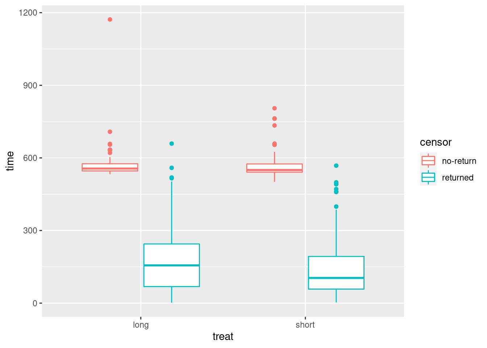
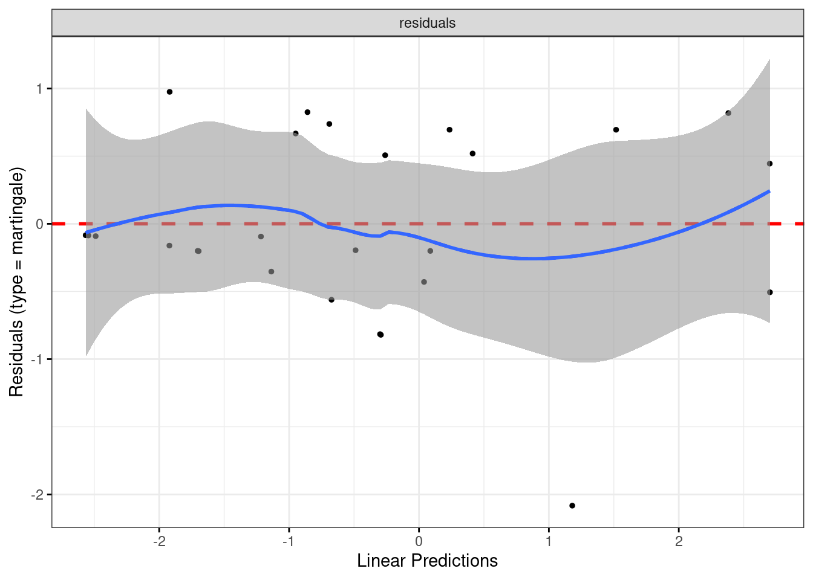

Chapter 36 K-means cluster analysis
Packages for this chapter:
36.1 Clustering the Australian athletes
Recall the Australian athlete data (that we’ve seen so many times before). This time, we’ll do some K-means clustering, and then see whether athletes of certain genders and certain sports tend to end up in the same cluster.
Read in the data from link, recalling that the data values are separated by tabs. Display (some of) the data set.
From your data frame, select only the columns that are numbers (or get rid of the ones that are text), and standardize all of the columns you have left. This is, done the best way, a slick piece of code. Display what you get.
Make a data frame that contains the total within-cluster sum of squares from a K-means clustering for each number of clusters from 2 to 20.
Use the data frame you just created to make a scree plot. What does the scree plot tell you?
Using a sensible number of clusters as deduced from your scree plot, run a K-means cluster analysis. Don’t forget the
nstart!Make a data frame consisting of the athletes’ sport and gender, and which of your clusters they belong to, taking the appropriate things from the appropriate one of your data frames.
Using the data frame you created in the previous part, display all the athletes in some of your clusters. Do the athletes within a cluster appear to have anything in common? (If a cluster has more than 10 athletes in it, make sure to look at them all.)
Add the cluster membership to the data frame you read in from the file, and do a discriminant analysis treating the clusters as known groups. You can display the output.
How many linear discriminants do you have? How many do you think are important?
Which variables seem to be important in distinguishing the clusters? Look only at the linear discriminants that you judged to be important.
Draw a biplot (which shows the first two LDs), drawing the clusters in different colours. Comment briefly on anything especially consistent or inconsistent with what you’ve seen so far.
36.2 Running, jumping, and throwing
The decathlon is a men’s36 track-and-field competition in which competitors complete 10 events over two days as follows, requiring the skills shown:
| Event | Skills |
|---|---|
| 100m | Running, speed |
| Long jump | Jumping, speed |
| Shot put | Throwing, strength |
| High jump | Jumping, agility |
| 400m | Running, speed |
| 110m hurdles | Running, jumping, speed |
| Discus | Throwing, agility (and maybe strength) |
| Pole vault | Jumping, agility |
| Javelin | Throwing, agility |
| 1500m | Running, endurance |
(note: in the pdf version, this table might appear twice.)
These are a mixture of running, jumping and throwing disciplines. The performance (time, distance or height) achieved in each event is converted to a number of points using standard tables. and the winner of the entire decathlon is the competitor with the largest total of points. The basic idea is that a “good” performance in an event is worth 1000 points, and the score decreases if the athlete takes more seconds (running) or achieves fewer metres (jumping/throwing). A good decathlete has to be at least reasonably good at all the disciplines.
For the decathlon competition at the 2013 Track and Field World Championship, a record was kept of each competitor’s performance in each event (for the competitors that competed in all ten events). These values are in link.
Read in the data and verify that you have the right number of variables.
Some of the performances are times in seconds, and some of them are distances (or heights) in metres. Also, some of the columns are more variable than others. Produce a matrix of standardized performances in each event, making sure not to try to standardize the names!
We are going to make a scree plot to decide on the number of clusters our K-means clustering should use. Using a loop, or otherwise,37 obtain the total within-cluster sum of squares for these data for each number of clusters for 2 up to 20.
Using what you calculated in the previous part, draw a scree plot. How does your scree plot tell you that 5 is a possible number of clusters? Explain briefly.
Run K-means with 5 clusters. Produce an output that shows which competitors are in which cluster.
Display the cluster means for all of the events. (This has already been calculated; you just have to display it.) Find the cluster mean, looking at all of the events, that is farthest from zero, and see if you can describe the strengths and weaknesses of the athletes in that cluster (look at all the events for the cluster that has that extreme mean). Bear in mind (i) that these are the original performances standardized, and (ii) for a running event, a smaller value is better.
36.3 Clustering the Swiss bills
This question is about the Swiss bank counterfeit bills again. This time we’re going to ignore whether each bill is counterfeit or not, and see what groups they break into. Then, at the end, we’ll see whether cluster analysis was able to pick out the counterfeit ones or not.
Read the data in again (just like last time), and look at the first few rows. This is just the same as before.
The variables in this data frame are on different scales. Standardize them so that they all have mean 0 and standard deviation 1. (Don’t try to standardize the
statuscolumn!)We are going to make a scree plot. First, calculate the total within-cluster SS for each number of clusters from 2 to 10.
* Make a scree plot (creating a data frame first if you need). How many clusters do you think you should use?
Run K-means with the number of clusters that you found in (here). How many bills are in each cluster?
Make a table showing cluster membership against actual status (counterfeit or genuine). Are the counterfeit bills mostly in certain clusters?
36.4 Grouping similar cars
The file link contains information on seven variables for 32 different cars. The variables are:
Carname: name of the car (duh!)mpg: gas consumption in miles per US gallon (higher means the car uses less gas)disp: engine displacement (total volume of cylinders in engine): higher is more powerfulhp: engine horsepower (higher means a more powerful engine)drat: rear axle ratio (higher means more powerful but worse gas mileage)wt: car weight in US tonsqsec: time needed for the car to cover a quarter mile (lower means faster)
Read in the data and display its structure. Do you have the right number of cars and variables?
The variables are all measured on different scales. Use
scaleto produce a matrix of standardized (\(z\)-score) values for the columns of your data that are numbers.Run a K-means cluster analysis for these data, obtaining 3 clusters, and display the results. Take whatever action you need to obtain the best (random) result from a number of runs.
Display the car names together with which cluster they are in. If you display them all at once, sort by cluster so that it’s easier to see which clusters contain which cars. (You may have to make a data frame first.)
I have no idea whether 3 is a sensible number of clusters. To find out, we will draw a scree plot (in a moment). Write a function that accepts the number of clusters and the (scaled) data, and returns the total within-cluster sum of squares.
Calculate the total within-group sum of squares for each number of clusters from 2 to 10, using the function you just wrote.
Make a scree plot, using the total within-cluster sums of squares values that you calculated in the previous part.
What is a suitable number of clusters for K-means, based on your scree plot?
Run a K-means analysis using the number of clusters suggested by your scree plot, and list the car names together with the clusters they belong to, sorted by cluster.
36.5 Rating beer
Thirty-two students each rated 10 brands of beer:
Anchor Steam
Bass
Beck’s
Corona
Gordon Biersch
Guinness
Heineken
Pete’s Wicked Ale
Sam Adams
Sierra Nevada
The ratings are on a scale of 1 to 9, with a higher rating being better. The data are in link. I abbreviated the beer names for the data file. I hope you can figure out which is which.
Read in the data, and look at the first few rows.
The researcher who collected the data wants to see which beers are rated similarly to which other beers. Try to create a distance matrix from these data and explain why it didn’t do what you wanted. (Remember to get rid of the
studentcolumn first.)The R function
t()transposes a matrix: that is, it interchanges rows and columns. Feed the transpose of your read-in beer ratings intodist. Does this now give distances between beers?Try to explain briefly why I used
as.distin the class example (the languages one) butdisthere. (Think about the form of the input to each function.)* Obtain a clustering of the beers, using Ward’s method. Show the dendrogram.
What seems to be a sensible number of clusters? Which beers are in which cluster?
Re-draw your dendrogram with your clusters indicated.
Obtain a K-means clustering with 2 clusters.38 Note that you will need to use the (transposed) original data, not the distances. Use a suitably large value of
nstart. (The data are ratings all on the same scale, so there is no need forscalehere. In case you were wondering.)How many beers are in each cluster?
Which beers are in each cluster? You can do this simply by obtaining the cluster memberships and using
sortas in the last question, or you can do it as I did in class by obtaining the names of the things to be clustered and picking out the ones of them that are in cluster 1, 2, 3, .)
My solutions follow:
36.6 Clustering the Australian athletes
Recall the Australian athlete data (that we’ve seen so many times before). This time, we’ll do some K-means clustering, and then see whether athletes of certain genders and certain sports tend to end up in the same cluster.
- Read in the data from link, recalling that the data values are separated by tabs. Display (some of) the data set.
Solution
So, read_tsv.
my_url <- "https://raw.githubusercontent.com/nxskok/datafiles/master/ais.txt"
athletes <- read_tsv(my_url)##
## ── Column specification ──────────────────────────────────────────────────────────────────────────────────────────────────────────────────────────────────────────────────────────────────────
## cols(
## Sex = col_character(),
## Sport = col_character(),
## RCC = col_double(),
## WCC = col_double(),
## Hc = col_double(),
## Hg = col_double(),
## Ferr = col_double(),
## BMI = col_double(),
## SSF = col_double(),
## `%Bfat` = col_double(),
## LBM = col_double(),
## Ht = col_double(),
## Wt = col_double()
## )## # A tibble: 202 x 13
## Sex Sport RCC WCC Hc Hg Ferr BMI SSF `%Bfat` LBM Ht Wt
## <chr> <chr> <dbl> <dbl> <dbl> <dbl> <dbl> <dbl> <dbl> <dbl> <dbl> <dbl> <dbl>
## 1 female Netball 4.56 13.3 42.2 13.6 20 19.2 49 11.3 53.1 177. 59.9
## 2 female Netball 4.15 6 38 12.7 59 21.2 110. 25.3 47.1 173. 63
## 3 female Netball 4.16 7.6 37.5 12.3 22 21.4 89 19.4 53.4 176 66.3
## 4 female Netball 4.32 6.4 37.7 12.3 30 21.0 98.3 19.6 48.8 170. 60.7
## 5 female Netball 4.06 5.8 38.7 12.8 78 21.8 122. 23.1 56.0 183 72.9
## 6 female Netball 4.12 6.1 36.6 11.8 21 21.4 90.4 16.9 56.4 178. 67.9
## 7 female Netball 4.17 5 37.4 12.7 109 21.5 107. 21.3 53.1 177. 67.5
## 8 female Netball 3.8 6.6 36.5 12.4 102 24.4 157. 26.6 54.4 174. 74.1
## 9 female Netball 3.96 5.5 36.3 12.4 71 22.6 101. 17.9 56.0 174. 68.2
## 10 female Netball 4.44 9.7 41.4 14.1 64 22.8 126. 25.0 51.6 174. 68.8
## # … with 192 more rows\(\blacksquare\)
- From your data frame, select only the columns that are numbers (or get rid of the ones that are text), and standardize all of the columns you have left. This is, done the best way, a slick piece of code. Display what you get.
Solution
This first one is a bit too slick:
## # A tibble: 202 x 13
## Sex Sport RCC[,1] WCC[,1] Hc[,1] Hg[,1] Ferr[,1] BMI[,1] SSF[,1] `%Bfat`[,1] LBM[,1] Ht[,1] Wt[,1]
## <chr> <chr> <dbl> <dbl> <dbl> <dbl> <dbl> <dbl> <dbl> <dbl> <dbl> <dbl> <dbl>
## 1 female Netball -0.346 3.44 -0.243 -0.709 -1.20 -1.33 -0.615 -0.358 -0.898 -0.339 -1.08
## 2 female Netball -1.24 -0.616 -1.39 -1.37 -0.376 -0.631 1.26 1.90 -1.36 -0.771 -0.862
## 3 female Netball -1.22 0.273 -1.53 -1.66 -1.16 -0.543 0.613 0.950 -0.875 -0.422 -0.625
## 4 female Netball -0.870 -0.394 -1.47 -1.66 -0.987 -0.672 0.899 0.989 -1.23 -1.05 -1.03
## 5 female Netball -1.44 -0.727 -1.20 -1.30 0.0237 -0.414 1.63 1.55 -0.675 0.298 -0.151
## 6 female Netball -1.31 -0.560 -1.77 -2.03 -1.18 -0.550 0.656 0.542 -0.644 -0.196 -0.510
## 7 female Netball -1.20 -1.17 -1.55 -1.37 0.676 -0.519 1.16 1.26 -0.900 -0.288 -0.539
## 8 female Netball -2.01 -0.283 -1.80 -1.59 0.529 0.522 2.69 2.11 -0.801 -0.617 -0.0652
## 9 female Netball -1.66 -0.893 -1.85 -1.59 -0.124 -0.114 0.985 0.714 -0.681 -0.668 -0.489
## 10 female Netball -0.608 1.44 -0.462 -0.342 -0.271 -0.0544 1.76 1.85 -1.01 -0.658 -0.446
## # … with 192 more rowsIt standardizes all the columns that are numeric all right, but any other columns it finds it leaves as they are, while we want to get rid of them first. So do it in two steps: get the numeric columns, and standardize all of those:
This, in fact:
## # A tibble: 202 x 11
## RCC[,1] WCC[,1] Hc[,1] Hg[,1] Ferr[,1] BMI[,1] SSF[,1] `%Bfat`[,1] LBM[,1] Ht[,1] Wt[,1]
## <dbl> <dbl> <dbl> <dbl> <dbl> <dbl> <dbl> <dbl> <dbl> <dbl> <dbl>
## 1 -0.346 3.44 -0.243 -0.709 -1.20 -1.33 -0.615 -0.358 -0.898 -0.339 -1.08
## 2 -1.24 -0.616 -1.39 -1.37 -0.376 -0.631 1.26 1.90 -1.36 -0.771 -0.862
## 3 -1.22 0.273 -1.53 -1.66 -1.16 -0.543 0.613 0.950 -0.875 -0.422 -0.625
## 4 -0.870 -0.394 -1.47 -1.66 -0.987 -0.672 0.899 0.989 -1.23 -1.05 -1.03
## 5 -1.44 -0.727 -1.20 -1.30 0.0237 -0.414 1.63 1.55 -0.675 0.298 -0.151
## 6 -1.31 -0.560 -1.77 -2.03 -1.18 -0.550 0.656 0.542 -0.644 -0.196 -0.510
## 7 -1.20 -1.17 -1.55 -1.37 0.676 -0.519 1.16 1.26 -0.900 -0.288 -0.539
## 8 -2.01 -0.283 -1.80 -1.59 0.529 0.522 2.69 2.11 -0.801 -0.617 -0.0652
## 9 -1.66 -0.893 -1.85 -1.59 -0.124 -0.114 0.985 0.714 -0.681 -0.668 -0.489
## 10 -0.608 1.44 -0.462 -0.342 -0.271 -0.0544 1.76 1.85 -1.01 -0.658 -0.446
## # … with 192 more rowsThe columns might have weird names, possibly because scale expects
a matrix or data frame (to standardize each column), and here it’s
getting the columns one at a time.
Elsewhere, I stuck scale() on the end, which produces a
matrix, which I should then display the top of (it has 200-plus rows):
## RCC WCC Hc Hg Ferr BMI SSF %Bfat LBM Ht Wt
## [1,] -0.3463363 3.4385826 -0.2434034 -0.7092631 -1.19736325 -1.3254121 -0.6148189 -0.3582372 -0.8977457 -0.3394075 -1.0849225
## [2,] -1.2415791 -0.6157363 -1.3900079 -1.3698371 -0.37633203 -0.6305634 1.2644802 1.8986922 -1.3606308 -0.7708629 -0.8623105
## [3,] -1.2197439 0.2728816 -1.5265084 -1.6634256 -1.15525908 -0.5432708 0.6134811 0.9503618 -0.8747927 -0.4215895 -0.6253364
## [4,] -0.8703809 -0.3935818 -1.4719082 -1.6634256 -0.98684242 -0.6724638 0.8990609 0.9891351 -1.2313290 -1.0482270 -1.0274742
## [5,] -1.4380958 -0.7268135 -1.1989072 -1.2964400 0.02365754 -0.4140778 1.6298994 1.5513480 -0.6751017 0.2975028 -0.1513883
## [6,] -1.3070846 -0.5601977 -1.7722094 -2.0304111 -1.17631117 -0.5502542 0.6564716 0.5416266 -0.6444978 -0.1955890 -0.5104399The first athlete has a WCC value that is very large compared
to the others.
Extra: for those keeping track, sometimes you need an across and sometimes you don’t. The place where you need across is when you want to apply something to a bunch of columns all at once. select doesn’t need it, but something like mutate or summarize does, because you are changing the values in or summarizing several columns all at once.
One more: if the columns you are acting on in across are selected using a select helper (or by naming them or in some other way that depends on their names), you put that directly inside across (as in across(everything()) above), but if you are choosing the columns to act on by a property of them (eg. that they are numbers), you have a where inside the across, as in across(where(is.numeric)). You typically will be closing several brackets at the end. In R Studio, when you type a close-bracket, it briefly shows you the matching open-bracket so that you can keep track.
\(\blacksquare\)
- Make a data frame that contains the total within-cluster sum of squares from a K-means clustering for each number of clusters from 2 to 20.
Solution
I’m going to attempt a slick way of doing this, and then I’ll talk about how I’d expect you to tackle this. First, though, I set the random number seed so that everything comes out the same every time I run it:
Here we go:
withinss <- tibble(clusters = 2:20) %>%
rowwise() %>%
mutate(wss = kmeans(athletes.s, clusters, nstart = 20)$tot.withinss)
withinss## # A tibble: 19 x 2
## # Rowwise:
## clusters wss
## <int> <dbl>
## 1 2 1426.
## 2 3 1201.
## 3 4 1043.
## 4 5 968.
## 5 6 901.
## 6 7 836.
## 7 8 782.
## 8 9 735.
## 9 10 688.
## 10 11 654.
## 11 12 631.
## 12 13 605.
## 13 14 583.
## 14 15 562.
## 15 16 551.
## 16 17 532.
## 17 18 513.
## 18 19 502.
## 19 20 487.A one-liner, kinda. Remember that kmeans expects a single number of clusters, a value like 5, rather than a collection of possible numbers of clusters in a vector, so to do each of them, we need to work rowwise (and do one row at a time).
The advantage to this is that it looks exactly like
the kmeans that you would write.
All right then, what is a better way to do this? First write a function to take a number of clusters and a data frame and return the total within-cluster sum of squares:
and test it (against my answer above):
## [1] 1201.346Check (with a few extra decimals).
Then calculate all the total within-cluster sum of squares values by making a little data frame with all your numbers of clusters:
## # A tibble: 19 x 1
## clusters
## <int>
## 1 2
## 2 3
## 3 4
## 4 5
## 5 6
## 6 7
## 7 8
## 8 9
## 9 10
## 10 11
## 11 12
## 12 13
## 13 14
## 14 15
## 15 16
## 16 17
## 17 18
## 18 19
## 19 20and then make a pipeline and save it, using rowwise and your function:
tibble(clusters = 2:20) %>%
rowwise() %>%
mutate(wss = twss(clusters, athletes.s)) -> withinss
withinss## # A tibble: 19 x 2
## # Rowwise:
## clusters wss
## <int> <dbl>
## 1 2 1426.
## 2 3 1201.
## 3 4 1043.
## 4 5 968.
## 5 6 901.
## 6 7 836.
## 7 8 777.
## 8 9 733.
## 9 10 696.
## 10 11 658.
## 11 12 626.
## 12 13 608.
## 13 14 585.
## 14 15 569.
## 15 16 551.
## 16 17 527.
## 17 18 511.
## 18 19 504.
## 19 20 489.This is better because the mutate line is simpler; you have off-loaded the details of the thinking to your function. Read this as “for each number of clusters, work out the total within-cluster sum of squares for that number of clusters.” The important thing here is what you are doing, not how you are doing it; if you care about the how-you-are-doing-it, go back and look at your function. Remember that business about how you can only keep track of seven things, plus or minus two, at once? When you write a function, you are saving some of the things you have to keep track of.
\(\blacksquare\)
- Use the data frame you just created to make a scree plot. What does the scree plot tell you?
Solution
ggscreeplot is for principal components; this one you can
plot directly, with the points joined by lines:

On this plot, you are looking for “elbows”, but ones sufficiently far down the mountain. For example, that’s an elbow at 4 clusters, but it’s still up the mountain, which means that the total within-cluster sum of squares is quite large and that the athletes within those 4 clusters might be quite dissimilar from each other. I see an elbow at 12 clusters and possibly others at 14, 16 and 19; these are nearer the bottom of the mountain, so that the athletes within a cluster will be quite similar to each other. With over 200 athletes, there’s no problem having as many as 19 clusters, because that will still offer you some insight.
So I’m thinking 12 clusters (because I want to have a fairly small number of clusters to interpret later).
The other thing I’m thinking is I could have put a bigger number of
clusters on the scree plot. The wss axis should go all the
way down to 0 for 202 clusters, with each athlete in one cluster. So
you could make the point that even 20 clusters is still a fair way up
the mountain.
\(\blacksquare\)
- Using a sensible number of clusters as deduced from your scree
plot, run a K-means cluster analysis. Don’t forget the
nstart!
Solution
This:
or for your chosen number of clusters.
I don’t think there’s any great need to display the output, since the most interesting thing is which athletes are in which cluster, which we’ll get to next.
\(\blacksquare\)
- Make a data frame consisting of the athletes’ sport and gender, and which of your clusters they belong to, taking the appropriate things from the appropriate one of your data frames.
Solution
athletes2 <- tibble(
gender = athletes$Sex,
sport = athletes$Sport,
cluster = athletes.km$cluster
)
athletes2## # A tibble: 202 x 3
## gender sport cluster
## <chr> <chr> <int>
## 1 female Netball 12
## 2 female Netball 9
## 3 female Netball 9
## 4 female Netball 9
## 5 female Netball 9
## 6 female Netball 9
## 7 female Netball 9
## 8 female Netball 11
## 9 female Netball 9
## 10 female Netball 11
## # … with 192 more rows\(\blacksquare\)
- Using the data frame you created in the previous part, display all the athletes in some of your clusters. Do the athletes within a cluster appear to have anything in common? (If a cluster has more than 10 athletes in it, make sure to look at them all.)
Solution
Let’s start with my cluster 1:
## # A tibble: 17 x 3
## gender sport cluster
## <chr> <chr> <int>
## 1 male Swim 1
## 2 male Row 1
## 3 male Row 1
## 4 male Row 1
## 5 male Row 1
## 6 male Row 1
## 7 male Field 1
## 8 male TSprnt 1
## 9 male Field 1
## 10 male WPolo 1
## 11 male WPolo 1
## 12 male WPolo 1
## 13 male WPolo 1
## 14 male WPolo 1
## 15 male WPolo 1
## 16 male WPolo 1
## 17 male WPolo 1These are almost all female, and if you remember back to our study of height and weight for these data, these are the kinds of sport that are played by shorter, lighter people. Cluster 2:
## # A tibble: 6 x 3
## gender sport cluster
## <chr> <chr> <int>
## 1 male BBall 2
## 2 male Field 2
## 3 male Field 2
## 4 male Field 2
## 5 male TSprnt 2
## 6 male WPolo 2Males, apparently some of the more muscular ones, but not the field athletes.
## # A tibble: 5 x 3
## gender sport cluster
## <chr> <chr> <int>
## 1 female Field 3
## 2 female Field 3
## 3 male Field 3
## 4 male Field 3
## 5 male Field 3This is an odd one, since there is one male rower (rowers tend to be fairly big) along with a bunch of females mostly from sports involving running. I have a feeling this rower is a “cox”, whose job is not to row, but to sit in the boat and keep everybody in time by yelling out “stroke” in rhythm. Since the cox is not rowing, they need to be light in weight.
Let’s investigate:
athletes %>%
select(gender = Sex, sport = Sport, ht = Ht, wt = Wt) %>%
mutate(cluster = athletes.km$cluster) -> athletes2a
athletes2a %>% filter(sport == "Row", cluster == 3)## # A tibble: 0 x 5
## # … with 5 variables: gender <chr>, sport <chr>, ht <dbl>, wt <dbl>, cluster <int>How does this athlete compare to the other rowers?
## ht wt
## Min. :156.0 Min. :49.80
## 1st Qu.:179.3 1st Qu.:72.90
## Median :181.8 Median :78.70
## Mean :182.4 Mean :78.54
## 3rd Qu.:186.3 3rd Qu.:87.20
## Max. :198.0 Max. :97.00The rower that is in cluster 3 is almost the lightest, and also almost the shortest, of all the rowers. Cluster 4:
## # A tibble: 23 x 3
## gender sport cluster
## <chr> <chr> <int>
## 1 female Netball 4
## 2 female Row 4
## 3 female Swim 4
## 4 female Swim 4
## 5 female Swim 4
## 6 female Swim 4
## 7 female Swim 4
## 8 female Field 4
## 9 female T400m 4
## 10 female T400m 4
## # … with 13 more rowsMales, but possibly more muscular ones.
## # A tibble: 4 x 3
## gender sport cluster
## <chr> <chr> <int>
## 1 male Field 5
## 2 male TSprnt 5
## 3 male TSprnt 5
## 4 male Tennis 5More males, from similar sports. I wonder what makes these last two clusters different?
One more:
## # A tibble: 10 x 3
## gender sport cluster
## <chr> <chr> <int>
## 1 male Swim 6
## 2 male Swim 6
## 3 male Row 6
## 4 male TSprnt 6
## 5 male TSprnt 6
## 6 male TSprnt 6
## 7 male T400m 6
## 8 male WPolo 6
## 9 male WPolo 6
## 10 male Tennis 6These are three of our “big guys”, by the looks of it.
\(\blacksquare\)
- Add the cluster membership to the data frame you read in from the file, and do a discriminant analysis treating the clusters as known groups. You can display the output.
Solution
MASS is already loaded (for me), so:
athletes.3 <- athletes %>%
mutate(cluster = athletes.km$cluster) %>%
lda(cluster ~ RCC + WCC + Hc + Hg + Ferr + BMI + SSF + `%Bfat` + LBM + Ht + Wt, data = .)We can display all the output now. The problem here, with 12 groups and 11 variables, is that there is rather a lot of it:
## Call:
## lda(cluster ~ RCC + WCC + Hc + Hg + Ferr + BMI + SSF + `%Bfat` +
## LBM + Ht + Wt, data = .)
##
## Prior probabilities of groups:
## 1 2 3 4 5 6 7 8 9 10 11 12
## 0.08415842 0.02970297 0.02475248 0.11386139 0.01980198 0.04950495 0.13366337 0.12871287 0.14356436 0.15346535 0.05445545 0.06435644
##
## Group means:
## RCC WCC Hc Hg Ferr BMI SSF `%Bfat` LBM Ht Wt
## 1 4.960000 9.729412 45.55294 15.51176 119.29412 25.20706 62.37059 11.151176 79.23529 188.2059 89.25588
## 2 5.343333 6.716667 48.28333 16.63333 81.50000 29.52333 71.15000 12.301667 93.50000 190.4000 106.73333
## 3 4.862000 7.880000 44.64000 15.48000 163.80000 30.91800 112.88000 19.948000 77.76800 177.3200 97.26000
## 4 4.272609 6.439130 39.74783 13.43478 65.52174 19.65652 54.27391 12.119565 47.23696 165.1652 53.79565
## 5 6.000000 8.150000 52.37500 17.87500 52.50000 23.91750 45.27500 8.655000 71.00000 180.5250 77.85000
## 6 5.182000 7.210000 46.44000 15.93000 200.30000 22.96800 47.22000 8.737000 68.60000 180.8200 75.27000
## 7 4.592963 7.292593 42.65926 14.35926 46.03704 22.74333 86.31111 18.587778 58.60296 178.0926 72.02963
## 8 4.919615 6.534615 44.70385 15.13462 82.46154 23.93077 52.94231 9.282308 80.88462 193.0885 89.17692
## 9 4.167241 5.993103 38.24828 12.68966 53.48276 22.05897 96.97241 19.652069 56.45069 178.5828 70.30862
## 10 4.976129 6.458065 45.22903 15.38710 62.06452 22.26258 39.41935 7.274194 68.16129 181.7484 73.47903
## 11 4.336364 8.818182 39.13636 13.21818 70.00000 25.03727 150.16364 26.948182 57.36364 177.1273 78.66364
## 12 4.896154 7.711538 44.09231 14.62308 64.69231 19.83538 45.86923 9.968462 52.68077 171.7769 58.51538
##
## Coefficients of linear discriminants:
## LD1 LD2 LD3 LD4 LD5 LD6 LD7 LD8 LD9 LD10 LD11
## RCC -1.266192600 0.256106446 0.808206001 -1.30196446 -0.68662990 -1.015303339 -0.2586150774 3.268658092 2.227417465 2.459320033 -3.223590160
## WCC -0.153469467 -0.078994605 0.205088034 0.09363755 0.17439964 -0.045305705 -0.4887843649 -0.305944872 0.045035808 0.130954678 -0.104354274
## Hc -0.093307975 0.021992675 -0.012087161 -0.01815509 0.12937102 0.113636476 -0.0404556230 -0.135696729 0.378862179 -0.244242634 0.960241443
## Hg -0.309019785 0.084450036 0.152385480 -0.26948443 0.42377099 0.255088250 -0.0274859879 -0.065936163 -2.060308226 -0.418372348 -1.406148260
## Ferr -0.008721007 -0.004551151 0.020550808 0.01356683 -0.01458943 0.014299265 0.0005406742 0.004488197 0.001074682 -0.001292279 0.001923835
## BMI 0.545370372 -0.625999624 1.090740309 -2.75390389 -1.83732490 -0.121556905 0.5594732320 -1.151700601 -0.099913184 0.854373979 0.112541184
## SSF -0.024252589 -0.023301617 0.008850497 0.03559861 -0.05001738 -0.125402412 -0.0397575804 0.034224172 -0.049027821 -0.005826493 0.057489341
## `%Bfat` 0.242726866 -0.161393823 -0.870521195 -0.10045502 0.15729382 1.006527655 -0.3021704980 0.267305723 -0.317551405 0.611206234 0.110412501
## LBM -0.158151567 -0.102776410 -1.156645388 0.17357076 -0.21293485 0.388650860 -0.5767730346 0.397152230 -0.688630708 0.895735977 0.511088448
## Ht 0.115146729 -0.138274596 0.210937402 -0.70318391 -0.54935153 0.008858563 0.0444158866 -0.259559694 -0.025683855 0.077943962 -0.024103789
## Wt -0.116874717 0.168228574 0.637666201 0.71560429 0.81228509 -0.302254866 0.4257184332 -0.045388285 0.672740432 -0.963283281 -0.478482727
##
## Proportion of trace:
## LD1 LD2 LD3 LD4 LD5 LD6 LD7 LD8 LD9 LD10 LD11
## 0.5493 0.1956 0.1011 0.0579 0.0404 0.0235 0.0191 0.0088 0.0033 0.0010 0.0000\(\blacksquare\)
- How many linear discriminants do you have? How many do you think are important?
Solution
Proportion of trace, at the bottom of the output.
It’s hard to draw the line here. The first two, or maybe the first seven, or something like that. Your call.
\(\blacksquare\)
- Which variables seem to be important in distinguishing the clusters? Look only at the linear discriminants that you judged to be important.
Solution
Look at the coefficients of linear discriminants.
This is rather large, since I had 12 clusters, and thus there are
11 LDs.
If we go back to my thought of only using two linear discriminants:
LD1 is mostly RCC positively and BMI negatively, in
that an athlete with large RCC and small BMI will
tend to score high (positive) on LD1. BMI is the familiar
body fat index. LD2 depends on RCC again, but this time
negatively, and maybe percent body fat and LBM. And so on, if
you went on.
It may be that RCC is just very variable anyway, since it
seems to appear just about everywhere.
Extra: we can also look at the means on each variable by cluster,
which is part of the output, in “Group Means”.
Perhaps the easiest thing to eyeball here is the cluster in which a
variable is noticeably biggest (or possibly smallest). For example,
WCC is highest in cluster 4, and while Ferritin is high
there, it is higher still in cluster 5. BMI is highest in
cluster 6 and lowest in clusters 1 and 3. Height is smallest in
cluster 1, with weight being smallest there as well, and weight is
much the biggest in cluster 6.
\(\blacksquare\)
- Draw a biplot (which shows the first two LDs), drawing the clusters in different colours. Comment briefly on anything especially consistent or inconsistent with what you’ve seen so far.
Solution
The thing to get the colours is to feed a groups into
ggbiplot. I suspect I need the factor in there
because the clusters are numbers and I want them treated as
categorical (the numbers are labels). Also, note that we will have
a lot of colours here, so I am trying to make them more
distinguishable using scale_colour_brewer from the
RColorBrewer package (loaded at the beginning):

What the biplot shows, that we haven’t seen any hint of so far, is that the clusters are pretty well separated on LD1 and LD2: there is not a great deal of overlap.
Anyway, low LD1 means high on BMI and low on RCC, as we saw before. The arrow for RCC points down as well as right, so it’s part of LD2 as well. There isn’t much else that points up or down, but percent body fat and LBM do as much as anything. This is all pretty much what we saw before.
As to where the clusters fall on the picture:
Cluster 1 in light blue was “small and light”: small BMI, so ought to be on the right. This cluster’s RCC was also small, which on balance puts them on the left, but then they should be top left because RCC points down. I dunno.
Cluster 2 in dark blue was “more muscular males”, mid-right, so above average on LD1 but about average on LD2.
Cluster 3, light green, was “running females” (mostly), lower left, so below average on both LD1 and LD2.
Cluster 4, dark green, “more muscular males” again. There is a lot of overlap with cluster 2.
Cluster 5, pink, was “yet more males”. Mostly above average on LD1 and below average on LD2. The latter was what distinguished these from clusters 4 and 2.
Cluster 6, red, was “big guys”. The biggest on LD1 and almost the biggest on LD2.
There is something a bit confusing in LD1, which contrasts RCC and BMI. You would expect, therefore, RCC and BMI to be negatively correlated, but if you look at the cluster means, that isn’t really the story: for example, cluster 1 has almost the lowest mean on both variables, and the highest RCC, in cluster 11, goes with a middling BMI.
I like these colours much better than the default ones. Much easier to tell apart. In any case, RCC and BMI seem to be important, so let’s plot them against each other, coloured by cluster:
athletes %>%
mutate(cluster = factor(athletes2$cluster)) %>%
ggplot(aes(x = RCC, y = BMI, colour = cluster)) +
geom_point() + scale_colour_brewer(palette = "Paired")
I decided to create a column called cluster in the data
frame, so that the legend would have a nice clear title. (If you do
the factor(athletes2$cluster) in the ggplot, that
is what will appear as the legend title.)
There seems to be very little relationship here, in terms of an overall trend on the plot. But at least these two variables do something to distinguish the clusters. It’s not as clear as using LD1 and LD2 (as it won’t be, since they’re designed to be the best at separating the groups), but you can see that the clusters are at least somewhat distinct.
The “paired” part of the colour palette indicates that successive colours come in pairs: light and dark of blue, green, red, orange, purple and brown (if you think of yellow as being “light brown” or brown as being “dark yellow”, like bananas).
A good resource for RColorBrewer is link. The “qualitative palettes” shown there are for distinguishing groups (what we want here); the sequential palettes are for distinguishing values on a continuous scale, and the diverging palettes are for drawing attention to high and low.
\(\blacksquare\)
36.7 Running, jumping, and throwing
The decathlon is a men’s39 track-and-field competition in which competitors complete 10 events over two days as follows, requiring the skills shown:
| Event | Skills |
|---|---|
| 100m | Running, speed |
| Long jump | Jumping, speed |
| Shot put | Throwing, strength |
| High jump | Jumping, agility |
| 400m | Running, speed |
| 110m hurdles | Running, jumping, speed |
| Discus | Throwing, agility (and maybe strength) |
| Pole vault | Jumping, agility |
| Javelin | Throwing, agility |
| 1500m | Running, endurance |
(note: in the pdf version, this table might appear twice.)
These are a mixture of running, jumping and throwing disciplines. The performance (time, distance or height) achieved in each event is converted to a number of points using standard tables. and the winner of the entire decathlon is the competitor with the largest total of points. The basic idea is that a “good” performance in an event is worth 1000 points, and the score decreases if the athlete takes more seconds (running) or achieves fewer metres (jumping/throwing). A good decathlete has to be at least reasonably good at all the disciplines.
For the decathlon competition at the 2013 Track and Field World Championship, a record was kept of each competitor’s performance in each event (for the competitors that competed in all ten events). These values are in link.
- Read in the data and verify that you have the right number of variables.
Solution
Checking the file, this is delimited by single spaces. You might be concerned by the quotes; we’ll read them in and see what happens to them.
##
## ── Column specification ──────────────────────────────────────────────────────────────────────────────────────────────────────────────────────────────────────────────────────────────────────
## cols(
## name = col_character(),
## x100m = col_double(),
## long.jump = col_double(),
## shot.put = col_double(),
## high.jump = col_double(),
## x400m = col_double(),
## x110mh = col_double(),
## discus = col_double(),
## pole.vault = col_double(),
## javelin = col_double(),
## x1500m = col_double()
## )## # A tibble: 24 x 11
## name x100m long.jump shot.put high.jump x400m x110mh discus pole.vault javelin x1500m
## <chr> <dbl> <dbl> <dbl> <dbl> <dbl> <dbl> <dbl> <dbl> <dbl> <dbl>
## 1 Ashton Eaton 10.4 7.73 14.4 1.93 46.0 13.7 45 5.2 64.8 270.
## 2 Damian Warner 10.4 7.39 14.2 2.05 48.4 14.0 44.1 4.8 64.7 270.
## 3 Rico Freimuth 10.6 7.22 14.8 1.99 48.0 13.9 48.7 4.9 56.2 278.
## 4 Mihail Dudas 10.7 7.51 13.4 1.96 47.7 14.6 44.1 4.9 59.1 267.
## 5 Michael Schrader 10.7 7.85 14.6 1.99 47.7 14.3 46.4 5 65.7 265.
## 6 Carlos Chinin 10.8 7.54 14.5 1.96 48.8 14.0 45.8 5.1 60.0 276.
## 7 Gunnar Nixon 10.8 7.8 14.7 2.14 48.6 14.6 42.4 4.6 58.0 276.
## 8 Eelco Sintnicolaas 10.8 7.65 14.1 2.02 48.2 14.2 39.2 5.3 56.8 265.
## 9 Pascal Behrenbruch 11.0 7.19 15.9 1.99 48.4 14.5 45.7 4.7 67.1 277.
## 10 Willem Coertzen 11.0 7.44 13.9 2.05 48.3 14.3 43.2 4.5 69.4 265.
## # … with 14 more rowsThe names got shortened for display, but the quotes seem to have properly disappeared.
Note that the columns that would otherwise start with digits have
x on the front of their names, so as to guarantee that the
column names are legal variable names (and thus won’t require any
special treatment later).
\(\blacksquare\)
- Some of the performances are times in seconds, and some of them are distances (or heights) in metres. Also, some of the columns are more variable than others. Produce a matrix of standardized performances in each event, making sure not to try to standardize the names!
Solution
scale is what I am trying to hint towards. Leave off the
first column. I would rather specify this by name than by
number. (People have an annoying habit of changing the order of
columns, but the column name is more work to change and
thus it is less likely that it will change.)
## x100m long.jump shot.put high.jump x400m x110mh discus pole.vault javelin x1500m
## [1,] -2.21 1.24 0.29 -0.95 -2.43 -1.77 0.27 1.10 0.55 -0.49
## [2,] -1.92 0.16 0.03 0.74 -0.46 -1.23 -0.06 -0.39 0.52 -0.46
## [3,] -1.33 -0.38 0.96 -0.11 -0.75 -1.37 1.71 -0.02 -1.17 0.63
## [4,] -1.08 0.54 -1.24 -0.53 -1.02 0.17 -0.09 -0.02 -0.60 -0.93
## [5,] -0.87 1.62 0.57 -0.11 -1.08 -0.50 0.82 0.36 0.72 -1.10
## [6,] -0.69 0.64 0.46 -0.53 -0.13 -1.03 0.59 0.73 -0.42 0.37
## [7,] -0.48 1.46 0.77 2.01 -0.33 0.13 -0.73 -1.14 -0.82 0.35
## [8,] -0.45 0.99 -0.21 0.32 -0.59 -0.74 -1.95 1.48 -1.06 -1.20
## [9,] -0.10 -0.47 2.68 -0.11 -0.46 -0.12 0.53 -0.76 1.00 0.54
## [10,] -0.10 0.32 -0.54 0.74 -0.53 -0.47 -0.40 -1.51 1.45 -1.21
## [11,] -0.02 0.03 -0.54 0.74 -0.47 -0.39 -0.09 1.85 -0.52 0.50
## [12,] -0.02 0.26 -0.10 -0.53 -0.13 0.69 1.42 -1.14 -2.26 0.06
## [13,] 0.01 -0.12 -0.02 -1.37 1.80 1.60 0.37 -1.51 1.46 1.82
## [14,] 0.33 -0.03 -0.02 -1.37 -0.62 0.24 0.81 -0.02 1.30 -1.31
## [15,] 0.40 0.95 -1.04 0.74 0.03 0.33 -1.20 0.73 0.65 0.64
## [16,] 0.47 -0.79 0.36 -0.11 0.04 -0.68 -0.09 0.36 -0.05 -0.05
## [17,] 0.57 -0.19 -0.60 0.32 1.07 1.51 -0.69 -1.51 -0.95 0.72
## [18,] 0.61 -2.09 -1.63 -1.37 -0.24 -0.32 -2.39 0.73 0.46 0.36
## [19,] 0.75 0.16 1.03 1.59 0.57 -0.16 0.70 0.73 -0.42 0.88
## [20,] 0.82 -0.25 -0.86 1.59 1.36 1.74 -0.94 -0.02 -0.49 2.07
## [21,] 0.89 0.51 -0.73 0.74 0.47 -0.68 0.41 1.10 0.80 -1.14
## [22,] 1.24 -0.69 1.07 -0.11 0.73 0.06 1.26 0.36 0.16 -0.02
## [23,] 1.56 -2.28 0.98 -1.80 1.32 1.18 -0.69 -1.51 -1.44 -1.83
## [24,] 1.63 -1.58 -1.69 -0.53 1.85 1.80 0.39 -0.02 1.11 0.78
## attr(,"scaled:center")
## x100m long.jump shot.put high.jump x400m x110mh discus pole.vault
## 10.977083 7.339167 14.209583 1.997500 48.960000 14.512500 44.288333 4.904167
## javelin x1500m
## 62.069583 273.306667
## attr(,"scaled:scale")
## x100m long.jump shot.put high.jump x400m x110mh discus pole.vault
## 0.28433720 0.31549708 0.61480629 0.07091023 1.20878667 0.44795429 2.60828224 0.26780779
## javelin x1500m
## 5.01529875 7.22352899I think the matrix of standardized values is small enough to look at all of, particularly if I round off the values to a small number of decimals. (Note that the means and SDs appear at the bottom as “attributes”.)
\(\blacksquare\)
- We are going to make a scree plot to decide on the number of clusters our K-means clustering should use. Using a loop, or otherwise,40 obtain the total within-cluster sum of squares for these data for each number of clusters for 2 up to 20.
Solution
Having kind of given the game away in the footnote, I guess I now have to keep up my end of the deal and show you the obvious way and the clever way. The obvious way is to do a Python-style loop, thus:
## [1] 20w <- numeric(0)
for (i in 2:maxclust) {
sol <- kmeans(decathlon, i, nstart = 20)
w[i] <- sol$tot.withinss
}
w## [1] NA 175.03246 151.08750 131.30247 113.59681 102.61744 89.50800 78.89089
## [9] 68.99662 60.77665 54.11902 47.64227 41.55046 35.39181 29.52008 25.05344
## [17] 21.30947 17.28444 13.80627 10.44197I defined maxclust earlier, surreptitiously. (Actually, what
happened was that I changed my mind about how many clusters I wanted
you to go up to, so that instead of hard-coding the maximum number of
clusters, I decided to put it in a variable so that I only had to
change it once if I changed my mind again.)
I decided to split the stuff within the loop into two lines, first
getting the \(i\)-cluster solution, and then pulling out the total
within-cluster sum of squares from it and saving it in the right place
in w. You can do it in one step or two; I don’t mind.
The first value in w is missing, because we didn’t calculate
a value for 1 cluster (so that this w has 20 values, one of
which is missing).
Not that there’s anything wrong with this,41 and if it works, it’s good, but the True R Way42 is not to use a loop, but get the whole thing in one shot. The first stage is to figure out what you want to do for some number of clusters. In this case, it’s something like this:
## [1] 151.0875There’s nothing special about 3; any number will do.
The second stage is to run this for each desired number of clusters, without using a loop. There are two parts to this, in my favoured way of doing it. First, write a function that will get the total within-group sum of squares for any K-means analysis for any number of clusters (input) for any dataframe (also input):
The value of doing it this way is that you only ever have to write this function once, and you can use it for any K-means analysis you ever do afterwards. Or, copy this one and use it yourself.
Let’s make sure it works:
## [1] 151.0875Check.
Second, use rowwise to work out the total within-group sum of squares for a variety of numbers of clusters. What you use depends on how much data you have, and therefore how many clusters you think it would be able to support (a smallish fraction of the total number of observations). I went from 2 to 20 before, so I’ll do that again:
## # A tibble: 19 x 2
## # Rowwise:
## clusters wss
## <int> <dbl>
## 1 2 175.
## 2 3 151.
## 3 4 131.
## 4 5 114.
## 5 6 100.
## 6 7 89.5
## 7 8 78.9
## 8 9 69.5
## 9 10 60.8
## 10 11 54.1
## 11 12 47.6
## 12 13 41.4
## 13 14 35.4
## 14 15 30.9
## 15 16 25.1
## 16 17 21.0
## 17 18 17.3
## 18 19 13.8
## 19 20 10.8This got a name that was wss with an extra s. Sometimes my imagination runs out.
There was (still is) also a function sapply that does the
same thing.
I
learned sapply and friends a long time ago, and now, with the
arrival of rowwise, I think I need to unlearn them.43
Extra: I made a post on Twitter, link. To which Malcolm Barrett replied with this: link and this: link. So now you know all about the Four Noble R Truths.
\(\blacksquare\)
- Using what you calculated in the previous part, draw a scree plot. How does your scree plot tell you that 5 is a possible number of clusters? Explain briefly.
Solution
This requires a teeny bit of care. If you went the loop way, what I
called w has a missing value first (unless you were
especially careful), so you have to plot it against 1 through 20:
tibble(clusters = 1:maxclust, wss = w) %>%
ggplot(aes(x = clusters, y = wss)) +
geom_point() + geom_line()## Warning: Removed 1 rows containing missing values (geom_point).## Warning: Removed 1 row(s) containing missing values (geom_path).The warning message is to say that you don’t have a total within-cluster sum of squares for 1 cluster, which you knew already.
Or you can save the data frame first and then feed it into
ggplot.
If you went the rowwise way, you will have the wss
values for 2 through 20 clusters already in a data
frame, so it is a fair bit simpler:

There is, I suppose, the tiniest elbow at 5 clusters. It’s not very clear, though. I would have liked it to be clearer.
\(\blacksquare\)
- Run K-means with 5 clusters. Produce an output that shows which competitors are in which cluster.
Solution
If you’re using R Markdown, you might like to start with this:
or some other random number seed of your choice. Using
nstart=20 or similar will give you the same clustering,
but which cluster is cluster 1 might vary between runs. So if you talk
about cluster 1 (below), and re-knit the document, you might otherwise
find that cluster 1 has changed identity since the last time you
knitted it. (I just remembered that for these solutions.)
Running the kmeans itself is a piece of cake, since you have
done it a bunch of times already (in your loop or rowwise):
## K-means clustering with 5 clusters of sizes 4, 8, 5, 6, 1
##
## Cluster means:
## x100m long.jump shot.put high.jump x400m x110mh discus
## 1 0.75760985 -0.53619092 -0.7922550 -1.554312e-15 1.5180512 1.6631161 -0.2159787
## 2 -0.02051555 0.02245134 0.9034011 2.644188e-01 -0.0589434 -0.3097414 0.6739749
## 3 0.28457995 0.07871177 -0.8288519 2.326886e-01 -0.1588370 -0.3582955 -1.0406594
## 4 -0.97448850 0.64184430 -0.1484207 -2.467909e-01 -1.0216857 -0.5934385 0.2274805
## 5 1.55771620 -2.27947172 0.9765949 -1.798048e+00 1.3236413 1.1775755 -0.6894704
## pole.vault javelin x1500m
## 1 -0.76236268 0.28321676 1.3477946
## 2 -0.10890895 -0.49565010 0.3441300
## 3 1.17932839 0.06548297 -0.1670467
## 4 -0.07779211 0.65707285 -0.9136808
## 5 -1.50916693 -1.43751822 -1.8269002
##
## Clustering vector:
## [1] 4 4 2 4 4 2 2 3 2 4 3 2 1 4 3 2 1 3 2 1 3 2 5 1
##
## Within cluster sum of squares by cluster:
## [1] 18.86978 41.40072 26.24500 27.08131 0.00000
## (between_SS / total_SS = 50.6 %)
##
## Available components:
##
## [1] "cluster" "centers" "totss" "withinss" "tot.withinss"
## [6] "betweenss" "size" "iter" "ifault"I displayed the result, so that I would know which of the things I
needed later. The Available components at the bottom is a big
hint with this.
To display who is in which cluster, it’s easiest to make a data frame of names and clusters and sort it:
## # A tibble: 24 x 2
## name cluster
## <chr> <int>
## 1 Sergey Sviridov 1
## 2 Brent Newdick 1
## 3 Maicel Uibo 1
## 4 Keisuke Ushiro 1
## 5 Rico Freimuth 2
## 6 Carlos Chinin 2
## 7 Gunnar Nixon 2
## 8 Pascal Behrenbruch 2
## 9 Eduard Mikhan 2
## 10 Artem Lukyanenko 2
## # … with 14 more rows\(\blacksquare\)
- Display the cluster means for all of the events. (This has already been calculated; you just have to display it.) Find the cluster mean, looking at all of the events, that is farthest from zero, and see if you can describe the strengths and weaknesses of the athletes in that cluster (look at all the events for the cluster that has that extreme mean). Bear in mind (i) that these are the original performances standardized, and (ii) for a running event, a smaller value is better.
Solution
This is the thing called centers:44
## x100m long.jump shot.put high.jump x400m x110mh discus
## 1 0.75760985 -0.53619092 -0.7922550 -1.554312e-15 1.5180512 1.6631161 -0.2159787
## 2 -0.02051555 0.02245134 0.9034011 2.644188e-01 -0.0589434 -0.3097414 0.6739749
## 3 0.28457995 0.07871177 -0.8288519 2.326886e-01 -0.1588370 -0.3582955 -1.0406594
## 4 -0.97448850 0.64184430 -0.1484207 -2.467909e-01 -1.0216857 -0.5934385 0.2274805
## 5 1.55771620 -2.27947172 0.9765949 -1.798048e+00 1.3236413 1.1775755 -0.6894704
## pole.vault javelin x1500m
## 1 -0.76236268 0.28321676 1.3477946
## 2 -0.10890895 -0.49565010 0.3441300
## 3 1.17932839 0.06548297 -0.1670467
## 4 -0.07779211 0.65707285 -0.9136808
## 5 -1.50916693 -1.43751822 -1.8269002My most extreme value is the \(-2.28\) in the long jump column, cluster 4. Yours may well be different, since the formation of clusters is random: it will probably not be the same number cluster, and it might not even be the same value. Use whatever you have. (I asked you to find the most extreme one so that the other events in the same cluster are likely to be extreme as well and you have something to say.)
So I have to look along my cluster 4 row. I see:
100m run high (bad)
long jump low (bad)
shot put high (good)
high jump low (bad)
400m run high (bad)
110m hurdles run high (bad)
discus lowish (bad)
pole vault low (bad)
javelin low (bad)
1500m low (good)
The only two good events here are shot put (throwing a heavy ball) and 1500m (a long run). So what these athletes have in common is good strength and endurance, and bad speed and agility. (You can use my “skills required” in the table at the top of the question as a guide.)
I said “these athletes”. I actually meant “this athlete”, since this is the cluster with just Marcus Nilsson in it. I ought to have checked that we were looking at a cluster with several athletes in it, and then this question would have made more sense, but the thought process is the same, so it doesn’t matter so much.
Your cluster may well be different; I’m looking for some sensible discussion based on the values you have. I’m hoping that the athletes in your cluster will tend to be good at something and bad at something else, and the things they are good at (or bad at) will have something in common.
What would have made more sense would have been to take the biggest cluster:
## [1] 4 8 5 6 1which in this case is cluster 3, and then
## x100m long.jump shot.put high.jump x400m x110mh discus
## 1 0.75760985 -0.53619092 -0.7922550 -1.554312e-15 1.5180512 1.6631161 -0.2159787
## 2 -0.02051555 0.02245134 0.9034011 2.644188e-01 -0.0589434 -0.3097414 0.6739749
## 3 0.28457995 0.07871177 -0.8288519 2.326886e-01 -0.1588370 -0.3582955 -1.0406594
## 4 -0.97448850 0.64184430 -0.1484207 -2.467909e-01 -1.0216857 -0.5934385 0.2274805
## 5 1.55771620 -2.27947172 0.9765949 -1.798048e+00 1.3236413 1.1775755 -0.6894704
## pole.vault javelin x1500m
## 1 -0.76236268 0.28321676 1.3477946
## 2 -0.10890895 -0.49565010 0.3441300
## 3 1.17932839 0.06548297 -0.1670467
## 4 -0.07779211 0.65707285 -0.9136808
## 5 -1.50916693 -1.43751822 -1.8269002which says that the eight athletes in cluster 3 are a bit above average for shot put and discus, and below average for javelin, and, taking a decision, about average for everything else. This is kind of odd, since these are all throwing events, but the javelin is propelled a long way by running fast, and the other two are propelled mainly using strength rather than speed, so it makes some kind of sense (after the fact, at least).
My guess is that someone good at javelin is likely to be good at sprint running and possibly also the long jump, since that depends primarily on speed, once you have enough technique. Well, one way to figure out whether I was right:
## x100m long.jump shot.put high.jump x400m x110mh
## x100m 1.00000000 -0.61351932 -0.17373396 -0.03703619 0.789091241 0.67372152
## long.jump -0.61351932 1.00000000 0.08369570 0.46379852 -0.548197160 -0.39484085
## shot.put -0.17373396 0.08369570 1.00000000 0.02012049 -0.172516054 -0.28310469
## high.jump -0.03703619 0.46379852 0.02012049 1.00000000 0.015217204 -0.08356323
## x400m 0.78909124 -0.54819716 -0.17251605 0.01521720 1.000000000 0.80285420
## x110mh 0.67372152 -0.39484085 -0.28310469 -0.08356323 0.802854203 1.00000000
## discus -0.14989960 0.12891051 0.46449586 -0.11770266 -0.068778203 -0.13777771
## pole.vault -0.12087966 0.21976890 -0.19328449 0.13565269 -0.361823592 -0.51871733
## javelin 0.02363715 0.01969302 -0.11313467 -0.12454417 -0.005823468 -0.05246857
## x1500m 0.14913949 -0.11672283 -0.06156793 0.27779220 0.446949386 0.39800522
## discus pole.vault javelin x1500m
## x100m -0.14989960 -0.12087966 0.023637150 0.149139491
## long.jump 0.12891051 0.21976890 0.019693022 -0.116722829
## shot.put 0.46449586 -0.19328449 -0.113134672 -0.061567926
## high.jump -0.11770266 0.13565269 -0.124544175 0.277792195
## x400m -0.06877820 -0.36182359 -0.005823468 0.446949386
## x110mh -0.13777771 -0.51871733 -0.052468568 0.398005215
## discus 1.00000000 -0.10045072 0.020977427 0.019890861
## pole.vault -0.10045072 1.00000000 0.052377148 -0.059888360
## javelin 0.02097743 0.05237715 1.000000000 -0.008858031
## x1500m 0.01989086 -0.05988836 -0.008858031 1.000000000or, for this, maybe better:
cor(decathlon) %>%
as.data.frame() %>%
rownames_to_column("event") %>%
pivot_longer(-event, names_to="event2", values_to="corr") %>%
filter(event < event2) %>%
arrange(desc(abs(corr)))## # A tibble: 45 x 3
## event event2 corr
## <chr> <chr> <dbl>
## 1 x110mh x400m 0.803
## 2 x100m x400m 0.789
## 3 x100m x110mh 0.674
## 4 long.jump x100m -0.614
## 5 long.jump x400m -0.548
## 6 pole.vault x110mh -0.519
## 7 discus shot.put 0.464
## 8 high.jump long.jump 0.464
## 9 x1500m x400m 0.447
## 10 x110mh x1500m 0.398
## # … with 35 more rowsI should probably talk about the code:
I want to grab the event names from the row names of the matrix. This is a bit awkward, because I want to turn the matrix into a data frame, but if I turn it into a
tibble, the row names will disappear.Thus, I turn it into an old-fashioned
data.frame, and then it has row names, which I can grab and put into a column calledevent.Then I make the data frame longer, creating a column
event2which is the second thing that each correlation will be between.The correlations between an event and itself will be 1, and between events B and A will be the same as between A and B. So I take only the rows where the first event is alphabetically less than the second one.
Then I arrange them in descending order of absolute correlation, since a large negative correlation is also interesting.
There are actually only a few high correlations:
100m with long jump, 400m and 110m hurdles
long jump with 100m, high jump and 400m
shot put with discus
high jump with long jump
400m with all the other running events plus long jump
110m hurdles with the other running events plus pole vault
discus with shot put
pole vault with 110m hurdles and maybe 400m
javelin with nothing
1500m with 400m
Some of the correlations are negative as expected, since they are between a running event and a jumping/throwing event (that is, a long distance goes with a small time, both of which are good).
I was wrong about javelin. It seems to be a unique skill in the decathlon, which is presumably why it’s there: you want 10 events that are as disparate as possible, rather than things that are highly correlated.
\(\blacksquare\)
36.8 Clustering the Swiss bills
This question is about the Swiss bank counterfeit bills again. This time we’re going to ignore whether each bill is counterfeit or not, and see what groups they break into. Then, at the end, we’ll see whether cluster analysis was able to pick out the counterfeit ones or not.
- Read the data in again (just like last time), and look at the first few rows. This is just the same as before.
Solution
The data file was aligned in columns, so:
##
## ── Column specification ──────────────────────────────────────────────────────────────────────────────────────────────────────────────────────────────────────────────────────────────────────
## cols(
## length = col_double(),
## left = col_double(),
## right = col_double(),
## bottom = col_double(),
## top = col_double(),
## diag = col_double(),
## status = col_character()
## )## # A tibble: 200 x 7
## length left right bottom top diag status
## <dbl> <dbl> <dbl> <dbl> <dbl> <dbl> <chr>
## 1 215. 131 131. 9 9.7 141 genuine
## 2 215. 130. 130. 8.1 9.5 142. genuine
## 3 215. 130. 130. 8.7 9.6 142. genuine
## 4 215. 130. 130. 7.5 10.4 142 genuine
## 5 215 130. 130. 10.4 7.7 142. genuine
## 6 216. 131. 130. 9 10.1 141. genuine
## 7 216. 130. 130. 7.9 9.6 142. genuine
## 8 214. 130. 129. 7.2 10.7 142. genuine
## 9 215. 129. 130. 8.2 11 142. genuine
## 10 215. 130. 130. 9.2 10 141. genuine
## # … with 190 more rows\(\blacksquare\)
- The variables in this data frame are on different
scales. Standardize them so that they all have mean 0 and standard
deviation 1. (Don’t try to standardize the
statuscolumn!)
Solution
What kind of thing do we have?
## [1] "matrix" "array"so something like this is needed to display some of it (rather than all of it):
## length left right bottom top diag
## [1,] -0.2549435 2.433346 2.8299417 -0.2890067 -1.1837648 0.4482473
## [2,] -0.7860757 -1.167507 -0.6347880 -0.9120152 -1.4328473 1.0557460
## [3,] -0.2549435 -1.167507 -0.6347880 -0.4966762 -1.3083061 1.4896737
## [4,] -0.2549435 -1.167507 -0.8822687 -1.3273542 -0.3119759 1.3161027
## [5,] 0.2761888 -1.444496 -0.6347880 0.6801176 -3.6745902 1.1425316
## [6,] 2.1351516 1.879368 1.3450576 -0.2890067 -0.6855997 0.7953894\(\blacksquare\)
- We are going to make a scree plot. First, calculate the total within-cluster SS for each number of clusters from 2 to 10.
Solution
When I first made this problem (some years ago),
I thought the obvious answer was a loop, but now that I’ve been
steeped in the Tidyverse a while, I think rowwise is much
clearer, so I’ll do that first.
Start by making a tibble that has one column called clusters containing the numbers 2 through 10:
## # A tibble: 9 x 1
## clusters
## <int>
## 1 2
## 2 3
## 3 4
## 4 5
## 5 6
## 6 7
## 7 8
## 8 9
## 9 10Now, for each of these numbers of clusters, calculate the total within-cluster sum of squares for it (that number of clusters). To do that, think about how you’d do it for something like three clusters:
## [1] 576.1284and then use that within your rowwise:
tibble(clusters = 2:10) %>%
rowwise() %>%
mutate(wss = kmeans(swiss.s, clusters, nstart = 20)$tot.withinss) -> wssq
wssq## # A tibble: 9 x 2
## # Rowwise:
## clusters wss
## <int> <dbl>
## 1 2 701.
## 2 3 576.
## 3 4 492.
## 4 5 449.
## 5 6 413.
## 6 7 381.
## 7 8 355.
## 8 9 334.
## 9 10 313.Another way is to save all the output from the kmeans, in a list-column, and then extract the thing you want, thus:
tibble(clusters = 2:10) %>%
rowwise() %>%
mutate(km = list(kmeans(swiss.s, clusters, nstart = 20))) %>%
mutate(wss = km$tot.withinss) -> wssq.2
wssq.2## # A tibble: 9 x 3
## # Rowwise:
## clusters km wss
## <int> <list> <dbl>
## 1 2 <kmeans> 701.
## 2 3 <kmeans> 576.
## 3 4 <kmeans> 492.
## 4 5 <kmeans> 449.
## 5 6 <kmeans> 413.
## 6 7 <kmeans> 383.
## 7 8 <kmeans> 355.
## 8 9 <kmeans> 334.
## 9 10 <kmeans> 313.The output from kmeans is a collection of things, not just a single number, so when you create the column km, you need to put list around the kmeans, and then you’ll create a list-column. wss, on the other hand, is a single number each time, so no list is needed, and wss is an ordinary column of numbers, labelled dbl at the top.
The most important thing in both of these is to remember the rowwise. Without it, everything will go horribly wrong! This is because kmeans expects a single number for the number of clusters, and rowwise will provide that single number (for the row you are looking at). If you forget the rowwise, the whole column clusters will get fed into kmeans all at once, and kmeans will get horribly confused.
If you insist, do it Python-style as a loop, like this:
clus <- 2:10
wss.1 <- numeric(0)
for (i in clus)
{
wss.1[i] <- kmeans(swiss.s, i, nstart = 20)$tot.withinss
}
wss.1## [1] NA 701.2054 576.4660 491.7085 449.3900 413.1265 381.3926 355.3338 333.9496
## [10] 312.8958Note that there are 10 wss values, but the first one is
missing, since we didn’t do one cluster.45
The numeric(0) says “wss has nothing in it, but if it had anything, it would be numbers”. Or, you can initialize
wss to however long it’s going to be (here 10), which is
actually more efficient (R doesn’t have to keep making it
“a bit longer”). If you initialize it to length 10, the 10 values will have
NAs in them when you start.
It doesn’t matter what nstart is: Ideally, big enough to have a decent
chance of finding the best clustering, but small enough that it
doesn’t take too long to run.
Whichever way you create your total within-cluster sums of squares, you can use it to make a scree plot (next part).
\(\blacksquare\)
- * Make a scree plot (creating a data frame first if you need). How many clusters do you think you should use?
Solution
The easiest is to use the output from the rowwise,
which I called wssq, this already being a dataframe:

If you did it the loop way, you’ll have to make a data frame
first, which you can then pipe into ggplot:
tibble(clusters = 1:10, wss = wss.1) %>%
ggplot(aes(x = clusters, y = wss)) + geom_point() + geom_line()## Warning: Removed 1 rows containing missing values (geom_point).## Warning: Removed 1 row(s) containing missing values (geom_path).
If you started at 2 clusters, your wss will start at 2
clusters also, and you’ll need to be careful to have something like
clusters=2:10 (not 1:10) in the definition of your
data frame.
Interpretation: I see a small elbow at 4 clusters, so that’s how many I think we should use. Any place you can reasonably see an elbow is good.
The warning is about the missing within-cluster total sum of squares for one cluster, since the loop way didn’t supply a total within-cluster sum of squares for one cluster.
\(\blacksquare\)
- Run K-means with the number of clusters that you found in (here). How many bills are in each cluster?
Solution
I’m going to start by setting the random number seed (so that my results don’t change every time I run this). You don’t need to do that, though you might want to in something like R Markdown code (for example, in an R Notebook):
Now, down to business:
## [1] 50 32 68 50This many. Note that my clusters 1 and 4 (and also 2 and 3) add up to 100 bills. There were 100 genuine and 100 counterfeit bills in the original data set. I don’t know why “7”. I just felt like it. Extra: you might remember that back before I actually ran K-means on each of the numbers of clusters from 2 to 10. How can we extract that output? Something like this. Here’s where the output was:
## # A tibble: 9 x 3
## # Rowwise:
## clusters km wss
## <int> <list> <dbl>
## 1 2 <kmeans> 701.
## 2 3 <kmeans> 576.
## 3 4 <kmeans> 492.
## 4 5 <kmeans> 449.
## 5 6 <kmeans> 413.
## 6 7 <kmeans> 383.
## 7 8 <kmeans> 355.
## 8 9 <kmeans> 334.
## 9 10 <kmeans> 313.Now we need to pull out the 4th row and the km column. We need the output as an actual thing, not a data frame, so:
Is that the right thing?
## [[1]]
## K-means clustering with 4 clusters of sizes 32, 50, 50, 68
##
## Cluster means:
## length left right bottom top diag
## 1 1.1475776 0.6848546 0.2855308 -0.5788787 -0.40538184 0.7764051
## 2 -0.5683115 0.2617543 0.3254371 1.3197396 0.04670298 -0.8483286
## 3 0.1062264 0.6993965 0.8352473 0.1927865 1.18251937 -0.9316427
## 4 -0.2002681 -1.0290130 -0.9878119 -0.8397381 -0.71307204 0.9434354
##
## Clustering vector:
## [1] 1 4 4 4 4 1 4 4 4 1 1 4 1 4 4 4 4 4 4 4 4 1 1 1 4 1 1 1 1 4 1 4 4 1 1 1 1 4 1 4 4 4
## [43] 4 1 4 4 4 4 4 4 4 1 4 1 4 4 1 4 1 4 4 4 4 4 4 1 4 4 4 3 4 4 4 4 4 4 4 4 1 4 4 4 4 1
## [85] 1 4 4 4 1 4 4 1 4 4 4 1 1 4 4 4 3 3 3 3 2 2 3 3 3 3 3 3 3 2 2 3 2 2 2 3 3 2 3 3 2 3
## [127] 3 3 3 3 2 2 3 3 2 2 2 3 2 2 3 2 2 3 2 2 2 3 2 3 2 2 2 2 2 2 2 2 2 3 3 2 2 2 2 3 1 3
## [169] 3 2 3 2 2 2 2 2 2 3 3 3 2 3 3 3 2 2 3 2 3 2 3 3 2 3 2 3 3 3 3 2
##
## Within cluster sum of squares by cluster:
## [1] 92.37757 95.51948 137.68573 166.12573
## (between_SS / total_SS = 58.8 %)
##
## Available components:
##
## [1] "cluster" "centers" "totss" "withinss" "tot.withinss"
## [6] "betweenss" "size" "iter" "ifault"Looks like it. But I should check:
## NULLAh. swiss.7a is actually a list, as evidenced by the [[1]] at the top of the output, so I get things from it thus:
## length left right bottom top diag
## 1 1.1475776 0.6848546 0.2855308 -0.5788787 -0.40538184 0.7764051
## 2 -0.5683115 0.2617543 0.3254371 1.3197396 0.04670298 -0.8483286
## 3 0.1062264 0.6993965 0.8352473 0.1927865 1.18251937 -0.9316427
## 4 -0.2002681 -1.0290130 -0.9878119 -0.8397381 -0.71307204 0.9434354This would be because it came from a list-column; using pull removed the data-frameness from swiss.7a, but not its listness.
\(\blacksquare\)
- Make a table showing cluster membership against actual status (counterfeit or genuine). Are the counterfeit bills mostly in certain clusters?
Solution
table. swiss.7$cluster shows the actual
cluster numbers:
##
## 1 2 3 4
## counterfeit 50 1 0 49
## genuine 0 31 68 1Or, if you prefer,
## # A tibble: 6 x 3
## obs pred n
## <chr> <int> <int>
## 1 counterfeit 1 50
## 2 counterfeit 2 1
## 3 counterfeit 4 49
## 4 genuine 2 31
## 5 genuine 3 68
## 6 genuine 4 1or even
tibble(obs = swiss$status, pred = swiss.7$cluster) %>%
count(obs, pred) %>%
pivot_wider(names_from = obs, values_from = n, values_fill = 0)## # A tibble: 4 x 3
## pred counterfeit genuine
## <int> <int> <int>
## 1 1 50 0
## 2 2 1 31
## 3 4 49 1
## 4 3 0 68In my case (yours might be different), 99 of the 100 counterfeit bills are in clusters 1 and 4, and 99 of the 100 genuine bills are in clusters 2 and 3.46 So the clustering has done a very good job of distinguishing the genuine bills from the counterfeit ones. (You could imagine, if you were an employee at the bank, saying that a bill in cluster 1 or 4 is counterfeit, and being right 99% of the time.) This is kind of a by-product of the clustering, though: we weren’t trying to distinguish counterfeit bills (that would have been the discriminant analysis that we did before); we were just trying to divide them into groups of different ones, and part of what made them different was that some of them were genuine bills and some of them were counterfeit.
\(\blacksquare\)
36.9 Grouping similar cars
The file link contains information on seven variables for 32 different cars. The variables are:
Carname: name of the car (duh!)mpg: gas consumption in miles per US gallon (higher means the car uses less gas)disp: engine displacement (total volume of cylinders in engine): higher is more powerfulhp: engine horsepower (higher means a more powerful engine)drat: rear axle ratio (higher means more powerful but worse gas mileage)wt: car weight in US tonsqsec: time needed for the car to cover a quarter mile (lower means faster)
- Read in the data and display its structure. Do you have the right number of cars and variables?
Solution
my_url <- "https://raw.githubusercontent.com/nxskok/datafiles/master/car-cluster.csv"
cars <- read_csv(my_url)##
## ── Column specification ──────────────────────────────────────────────────────────────────────────────────────────────────────────────────────────────────────────────────────────────────────
## cols(
## Carname = col_character(),
## mpg = col_double(),
## disp = col_double(),
## hp = col_double(),
## drat = col_double(),
## wt = col_double(),
## qsec = col_double()
## )## # A tibble: 32 x 7
## Carname mpg disp hp drat wt qsec
## <chr> <dbl> <dbl> <dbl> <dbl> <dbl> <dbl>
## 1 Mazda RX4 21 160 110 3.9 2.62 16.5
## 2 Mazda RX4 Wag 21 160 110 3.9 2.88 17.0
## 3 Datsun 710 22.8 108 93 3.85 2.32 18.6
## 4 Hornet 4 Drive 21.4 258 110 3.08 3.22 19.4
## 5 Hornet Sportabout 18.7 360 175 3.15 3.44 17.0
## 6 Valiant 18.1 225 105 2.76 3.46 20.2
## 7 Duster 360 14.3 360 245 3.21 3.57 15.8
## 8 Merc 240D 24.4 147. 62 3.69 3.19 20
## 9 Merc 230 22.8 141. 95 3.92 3.15 22.9
## 10 Merc 280 19.2 168. 123 3.92 3.44 18.3
## # … with 22 more rowsCheck, both on number of cars and number of variables.
\(\blacksquare\)
- The variables are all measured on different scales. Use
scaleto produce a matrix of standardized (\(z\)-score) values for the columns of your data that are numbers.
Solution
All but the first column needs to be scaled, so:
This is a matrix, as we’ve seen before.
Another way is like this:
I would prefer to have a look at my result, so that I can see that it has sane things in it:
## mpg disp hp drat wt qsec
## [1,] 0.1508848 -0.57061982 -0.5350928 0.5675137 -0.610399567 -0.7771651
## [2,] 0.1508848 -0.57061982 -0.5350928 0.5675137 -0.349785269 -0.4637808
## [3,] 0.4495434 -0.99018209 -0.7830405 0.4739996 -0.917004624 0.4260068
## [4,] 0.2172534 0.22009369 -0.5350928 -0.9661175 -0.002299538 0.8904872
## [5,] -0.2307345 1.04308123 0.4129422 -0.8351978 0.227654255 -0.4637808
## [6,] -0.3302874 -0.04616698 -0.6080186 -1.5646078 0.248094592 1.3269868or,
## mpg disp hp drat wt qsec
## [1,] 0.1508848 -0.57061982 -0.5350928 0.5675137 -0.610399567 -0.7771651
## [2,] 0.1508848 -0.57061982 -0.5350928 0.5675137 -0.349785269 -0.4637808
## [3,] 0.4495434 -0.99018209 -0.7830405 0.4739996 -0.917004624 0.4260068
## [4,] 0.2172534 0.22009369 -0.5350928 -0.9661175 -0.002299538 0.8904872
## [5,] -0.2307345 1.04308123 0.4129422 -0.8351978 0.227654255 -0.4637808
## [6,] -0.3302874 -0.04616698 -0.6080186 -1.5646078 0.248094592 1.3269868These look right. Or, perhaps better, this:
## mpg disp hp drat
## Min. :-1.6079 Min. :-1.2879 Min. :-1.3810 Min. :-1.5646
## 1st Qu.:-0.7741 1st Qu.:-0.8867 1st Qu.:-0.7320 1st Qu.:-0.9661
## Median :-0.1478 Median :-0.2777 Median :-0.3455 Median : 0.1841
## Mean : 0.0000 Mean : 0.0000 Mean : 0.0000 Mean : 0.0000
## 3rd Qu.: 0.4495 3rd Qu.: 0.7688 3rd Qu.: 0.4859 3rd Qu.: 0.6049
## Max. : 2.2913 Max. : 1.9468 Max. : 2.7466 Max. : 2.4939
## wt qsec
## Min. :-1.7418 Min. :-1.87401
## 1st Qu.:-0.6500 1st Qu.:-0.53513
## Median : 0.1101 Median :-0.07765
## Mean : 0.0000 Mean : 0.00000
## 3rd Qu.: 0.4014 3rd Qu.: 0.58830
## Max. : 2.2553 Max. : 2.82675The mean is exactly zero, for all variables, which is as it should be. Also, the standardized values look about as they should; even the extreme ones don’t go beyond \(\pm 3\).
This doesn’t show the standard deviation of each variable, though, which should be exactly 1 (since that’s what “standardizing” means). To get that, this:
## # A tibble: 1 x 6
## mpg disp hp drat wt qsec
## <dbl> <dbl> <dbl> <dbl> <dbl> <dbl>
## 1 1 1 1 1 1.00 1The idea here is “take the matrix cars.s, turn it into a data frame, and for each column, calculate the SD of it.”47
As you realize now, the same idea will get the mean of each column too:
## # A tibble: 1 x 6
## mpg disp hp drat wt qsec
## <dbl> <dbl> <dbl> <dbl> <dbl> <dbl>
## 1 7.11e-17 -9.08e-17 1.04e-17 -2.92e-16 4.68e-17 5.30e-16and we see that the means are all zero, to about 15 decimals, anyway.
\(\blacksquare\)
- Run a K-means cluster analysis for these data, obtaining 3 clusters, and display the results. Take whatever action you need to obtain the best (random) result from a number of runs.
Solution
The hint at the end says “use nstart”, so something like this:
## K-means clustering with 3 clusters of sizes 12, 6, 14
##
## Cluster means:
## mpg disp hp drat wt qsec
## 1 0.1384407 -0.5707543 -0.5448163 0.1887816 -0.2454544 0.5491221
## 2 1.6552394 -1.1624447 -1.0382807 1.2252295 -1.3738462 0.3075550
## 3 -0.8280518 0.9874085 0.9119628 -0.6869112 0.7991807 -0.6024854
##
## Clustering vector:
## [1] 1 1 1 1 3 1 3 1 1 1 1 3 3 3 3 3 3 2 2 2 1 3 3 3 3 2 2 2 3 1 3 1
##
## Within cluster sum of squares by cluster:
## [1] 24.95528 7.76019 33.37849
## (between_SS / total_SS = 64.5 %)
##
## Available components:
##
## [1] "cluster" "centers" "totss" "withinss" "tot.withinss"
## [6] "betweenss" "size" "iter" "ifault"You don’t need the set.seed, but if you run again, you’ll get
a different answer. With the nstart, you’ll probably get the
same clustering every time you run, but the clusters might have
different numbers, so that when you talk about “cluster 1” and then
re-run, what you were talking about might have moved to cluster 3, say.
If you are using R Markdown, for this reason, having a
set.seed before anything involving random number generation
is a smart move.48
\(\blacksquare\)
- Display the car names together with which cluster they are in. If you display them all at once, sort by cluster so that it’s easier to see which clusters contain which cars. (You may have to make a data frame first.)
Solution
As below. The car names are in the Carname column of the
original cars data frame, and the cluster numbers are in
the cluster part of the output from kmeans. You’ll
need to take some action to display everything (there are only 32
cars, so it’s perfectly all right to display all of them):
## # A tibble: 32 x 2
## car cluster
## <chr> <int>
## 1 Mazda RX4 1
## 2 Mazda RX4 Wag 1
## 3 Datsun 710 1
## 4 Hornet 4 Drive 1
## 5 Valiant 1
## 6 Merc 240D 1
## 7 Merc 230 1
## 8 Merc 280 1
## 9 Merc 280C 1
## 10 Toyota Corona 1
## # … with 22 more rowsOr start from the original data frame as read in from the file and grab only what you want:
## # A tibble: 32 x 2
## Carname cluster
## <chr> <int>
## 1 Mazda RX4 1
## 2 Mazda RX4 Wag 1
## 3 Datsun 710 1
## 4 Hornet 4 Drive 1
## 5 Valiant 1
## 6 Merc 240D 1
## 7 Merc 230 1
## 8 Merc 280 1
## 9 Merc 280C 1
## 10 Toyota Corona 1
## # … with 22 more rowsThis time we want to keep the car names and throw away everything else.
\(\blacksquare\)
- I have no idea whether 3 is a sensible number of clusters. To find out, we will draw a scree plot (in a moment). Write a function that accepts the number of clusters and the (scaled) data, and returns the total within-cluster sum of squares.
Solution
I failed to guess (in conversation with students, back when this was a question to be handed in) what you might do. There are two equally good ways to tackle this part and the next:
Write a function to calculate the total within-cluster sum of squares (in this part) and somehow use it in the next part, eg. via
rowwise, to get the total within-cluster sum of squares for each number of clusters.Skip the function-writing part and go directly to a loop in the next part.
I’m good with either approach: as long as you obtain, somehow, the total within-cluster sum of squares for each number of clusters, and use them for making a scree plot, I think you should get the points for this part and the next. I’ll talk about the function way here and the loop way in the next part.
The function way is just like the one in the previous question:
The data and number of clusters can have any names, as long as you use whatever input names you chose within the function.
I should probably check that this works, at least on 3 clusters. Before we had
## [1] 66.09396and the function gives
## [1] 66.09396Check.
I need to make sure that I used my scaled cars data, but I
don’t need to say anything about nstart, since that defaults
to the perfectly suitable 20.
\(\blacksquare\)
- Calculate the total within-group sum of squares for each number of clusters from 2 to 10, using the function you just wrote.
Solution
The loop way. I like to define my possible numbers of clusters into a vector first:
## [1] NA 87.29448 66.09396 50.94273 38.22004 29.28816 24.23138 20.76061 17.97491
## [10] 15.19850Now that I look at this again, it occurs to me that there is no great need to write a function to do this: you can just do what you need to do within the loop, like this:
w <- numeric(0)
nclus <- 2:10
for (i in nclus) {
w[i] <- kmeans(cars.s, i, nstart = 20)$tot.withinss
}
w## [1] NA 87.29448 66.09396 50.94273 38.22004 29.28816 24.23138 20.76061 17.33653
## [10] 15.19850You ought to have an nstart somewhere to make sure that
kmeans gets run a number of times and the best result taken.
If you initialize your w with numeric(10) rather
than numeric(0), it apparently gets filled with zeroes rather
than NA values. This means, later, when you come to plot your
w-values, the within-cluster total sum of squares will appear
to be zero, a legitimate value, for one cluster, even though it is
definitely not. (Or, I suppose, you could start your loop at 1
cluster, and get a legitimate, though very big, value for it.)
In both of the above cases, the curly brackets are optional because
there is only one line within the loop.49
What is actually happening here is an implicit
loop-within-a-loop. There is a loop over i that goes over all
clusters, and then there is a loop over another variable, j
say, that loops over the nstart runs that we’re doing for
i clusters, where we find the tot.withinss for
i clusters on the jth run, and if it’s the best one
so far for i clusters, we save it. Or, at least,
kmeans saves it.
Or, using rowwise, which I like better:
## # A tibble: 9 x 2
## # Rowwise:
## clusters ss
## <int> <dbl>
## 1 2 87.3
## 2 3 66.1
## 3 4 50.9
## 4 5 38.2
## 5 6 29.3
## 6 7 24.2
## 7 8 21.0
## 8 9 17.3
## 9 10 15.2Note that w starts at 1, but wwx starts at 2. For
this way, you have to define a function first to calculate the
total within-cluster sum of squares for a given number of clusters. If
you must, you can do the calculation in the mutate rather than writing a function,
but I find that very confusing to read, so I’d rather define the
function first, and then use it later. (The principle is to keep the mutate simple, and put the complexity in the function where it belongs.)
As I say, if you must:
tibble(clusters = 2:10) %>%
rowwise() %>%
mutate(wss = kmeans(cars.s,
clusters,
nstart = 20)$tot.withinss) -> wwx
wwx## # A tibble: 9 x 2
## # Rowwise:
## clusters wss
## <int> <dbl>
## 1 2 87.3
## 2 3 66.1
## 3 4 50.9
## 4 5 38.2
## 5 6 29.3
## 6 7 24.2
## 7 8 20.8
## 8 9 17.3
## 9 10 15.2The upshot of all of this is that if you had obtained a total within-cluster sum of squares for each number of clusters, somehow, and it’s correct, you should have gotten some credit50 for this part and the last part. This is a common principle of mine, and works on exams as well as assignments; it goes back to the idea of “get the job done first” that you first saw in C32.
\(\blacksquare\)
- Make a scree plot, using the total within-cluster sums of squares values that you calculated in the previous part.
Solution
If you did this the loop way, it’s tempting to leap into this:
## Error in data.frame(clusters = nclus, wss = w): arguments imply differing number of rows: 9, 10and then wonder why it doesn’t work. The problem is that w
has 10 things in it, including an NA at the front (as a
placeholder for 1 cluster):
## [1] NA 87.29448 66.09396 50.94273 38.22004 29.28816 24.23138 20.76061 17.33653
## [10] 15.19850## [1] 2 3 4 5 6 7 8 9 10while nclus only has 9. So do something like this instead:
tibble(clusters = 1:10, wss = w) %>%
ggplot(aes(x = clusters, y = wss)) + geom_point() + geom_line()## Warning: Removed 1 rows containing missing values (geom_point).## Warning: Removed 1 row(s) containing missing values (geom_path).
This gives a warning because there is no 1-cluster w-value,
but the point is properly omitted from the plot, so the plot you get
is fine.
Or plot the output from rowwise, which is easier since it’s
already a data frame:

\(\blacksquare\)
- What is a suitable number of clusters for K-means, based on your scree plot?
Solution
That seems to me to have a clear elbow at 6, suggesting six clusters.51 Look for where the plot “turns the corner” from going down to going out, or the point that is the “last one on the mountain and the first one on the scree”. This mountainside goes down to 6, and from there it seems to turn the corner and go out after that.
This is a judgement call, but this particular one is about as clear as you can expect to see.
I wanted a picture of some real scree. This one shows what I mean:

Note the rock face and the loose rock below, which is the scree. Imagine looking at the rock face and scree from side-on. This is in north Wales, the other end of Wales from Llanederyn/Llanedeyrn and Caldicot.
The above photo is from link.
\(\blacksquare\)
- Run a K-means analysis using the number of clusters suggested by your scree plot, and list the car names together with the clusters they belong to, sorted by cluster.
Solution
This is the same idea as above. The arrange idea from above
seems to be the cleanest way to arrange the output:
The K-means analysis is thus:
or use whatever number of clusters you thought was good from your scree plot.
Then display them:
## # A tibble: 32 x 2
## Carname cluster
## <chr> <int>
## 1 Fiat 128 1
## 2 Honda Civic 1
## 3 Toyota Corolla 1
## 4 Fiat X1-9 1
## 5 Porsche 914-2 1
## 6 Lotus Europa 1
## 7 Mazda RX4 2
## 8 Mazda RX4 Wag 2
## 9 Datsun 710 2
## 10 Merc 280 2
## # … with 22 more rowsThe logic to this is the same as above. I don’t have a good feeling for what the cars within a cluster have in common, by eyeballing the names, except for possibly a couple of things: my cluster 1 seems to be mostly family cars, and my cluster 3 appears to contain “boats” (large cars that consume a lot of gas). Your clusters ought to be about the same in terms of membership, but might be numbered differently.
Extra: to understand these clusters further, we can use them as input to a discriminant analysis. There isn’t any real need to run a MANOVA first, since we kind of know that these groups will be different (that’s why we ran a cluster analysis).
So, first we’ll make a data frame with the whole original data set
plus the clusters that came out of the K-means. We are adding the
clusters to cars, so it makes sense to use the same ideas as I used
above (without the arrange, that being only for looking at,
and without the select, since this time I want all the
variables that were in cars):
Now we fire away:
## Call:
## lda(cluster ~ mpg + disp + hp + drat + wt + qsec, data = carsx)
##
## Prior probabilities of groups:
## 1 2 3 4 5 6
## 0.18750 0.21875 0.12500 0.15625 0.21875 0.09375
##
## Group means:
## mpg disp hp drat wt qsec
## 1 30.06667 86.6500 75.5000 4.251667 1.873000 18.39833
## 2 20.41429 147.0286 120.4286 3.888571 2.892143 17.62714
## 3 14.60000 340.5000 272.2500 3.675000 3.537500 15.08750
## 4 21.64000 178.1200 93.8000 3.430000 3.096000 20.51400
## 5 16.78571 315.6286 170.0000 3.050000 3.688571 17.32000
## 6 11.83333 457.3333 216.6667 3.053333 5.339667 17.74000
##
## Coefficients of linear discriminants:
## LD1 LD2 LD3 LD4 LD5
## mpg -0.19737944 -0.0155769096 -0.27978549 0.353766928 0.035582922
## disp 0.01950855 -0.0001094137 -0.02090998 0.001034719 0.001680201
## hp 0.02804348 0.0251253160 -0.01727355 -0.015955928 -0.017220548
## drat 0.94348424 1.8928372037 0.56645563 1.264185553 -2.015644662
## wt 0.39068831 -1.3973097325 1.84808828 2.963377419 -0.300573153
## qsec 0.33992344 -0.3010056176 -0.66690927 -0.755053279 -0.738889640
##
## Proportion of trace:
## LD1 LD2 LD3 LD4 LD5
## 0.7977 0.1234 0.0368 0.0299 0.0122At the bottom (in trace) you see that LD1 is clearly
the most important thing for splitting into groups, LD2 might
be slightly relevant, and the other LDs are basically
meaningless. So a plot of the first two LDs should tell the story.
Before we get to that, however, we can take a look at the Coefficients
of Linear Discriminants, for LD1 and LD2
anyway. LD1 depends principally on drat, wt
and qsec (positively) and maybe negatively on
mpg. That means LD1 will be large if the car is
powerful, heavy, slow (since a larger qsec means the
car takes longer to go a quarter mile) and consumes a lot of gas. I
think I can summarize this as “powerful”.
LD2 also depends on drat and wt,
but note the signs: it is contrasting drat (displacement
ratio) with wt (weight), so that a car with a large
displacement ratio relative to its weight would be large (plus) on
LD2. That is, LD2 is “powerful for its weight”.
All right, now for a plot, with the points colour-coded by
cluster. There are two ways to do this; the easy one is
ggbiplot. The only weirdness here is that the
clusters are numbered, so you have to turn that into a factor
first (unless you like shades of blue). I didn’t load the package
first, so I call it here with the package name and the two colons:

Or you can do the predictions, then plot LD1 against
LD2, coloured by cluster:
p <- predict(carsx.1)
data.frame(p$x, cluster = factor(carsx$cluster)) %>%
ggplot(aes(x = LD1, y = LD2, colour = cluster)) + geom_point() +
coord_fixed()
The pattern of coloured points is the same. The advantage to the
biplot is that you see which original variables contribute to the
LD scores and thus distinguish the clusters; on the second
plot, you have to figure out for yourself which original variables
contribute, and how, to the LD scores.
You should include coord_fixed to make the axis scales the
same, since allowing them to be different will distort the picture
(the picture should come out square). You do the same thing in
multidimensional scaling.
As you see, LD1 is doing the best job of separating the
clusters, but LD2 is also doing something: separating
clusters 1 and 5, and also 2 and 4 (though 4 is a bit bigger than 2 on
LD1 also).
I suggested above that LD1 seems to be “powerful”
(on the right) vs. not (on the left). The displacement ratio is a
measure of the power of an engine, so a car
that is large on LD2 is powerful for its weight.
Let’s find the clusters I mentioned before. Cluster 3 was the
“boats”: big engines and heavy cars, but not fast. So they
should be large LD1 and small (negative)
LD2. Cluster 1 I called “family cars”: they are not
powerful, but have moderate-to-good power for their weight.
With that in mind, we can have a crack at the other clusters. Cluster 2 is neither powerful nor powerful-for-weight (I don’t know these cars, so can’t comment further) while cluster 5 is powerful and also powerful for their weight, so these might be sports cars. Clusters 6 and 4 are less and more powerful, both averagely powerful for their size.
36.10 Rating beer
Thirty-two students each rated 10 brands of beer:
Anchor Steam
Bass
Beck’s
Corona
Gordon Biersch
Guinness
Heineken
Pete’s Wicked Ale
Sam Adams
Sierra Nevada
The ratings are on a scale of 1 to 9, with a higher rating being better. The data are in link. I abbreviated the beer names for the data file. I hope you can figure out which is which.
- Read in the data, and look at the first few rows.
Solution
Data values are aligned in columns, but the column headers are
not aligned with them, so read_table2:
##
## ── Column specification ──────────────────────────────────────────────────────────────────────────────────────────────────────────────────────────────────────────────────────────────────────
## cols(
## student = col_character(),
## AnchorS = col_double(),
## Bass = col_double(),
## Becks = col_double(),
## Corona = col_double(),
## GordonB = col_double(),
## Guinness = col_double(),
## Heineken = col_double(),
## PetesW = col_double(),
## SamAdams = col_double(),
## SierraN = col_double()
## )## # A tibble: 32 x 11
## student AnchorS Bass Becks Corona GordonB Guinness Heineken PetesW SamAdams SierraN
## <chr> <dbl> <dbl> <dbl> <dbl> <dbl> <dbl> <dbl> <dbl> <dbl> <dbl>
## 1 S001 5 9 7 1 7 6 6 5 9 5
## 2 S008 7 5 6 8 8 4 8 8 7 7
## 3 S015 7 7 5 6 6 1 8 4 7 5
## 4 S022 7 7 5 2 5 8 4 6 8 9
## 5 S029 9 7 3 1 6 8 2 7 6 8
## 6 S036 7 6 4 3 7 6 6 5 4 9
## 7 S043 5 5 5 6 6 4 7 5 5 6
## 8 S050 5 3 1 5 5 5 3 5 5 9
## 9 S057 9 3 2 6 4 6 1 5 3 6
## 10 S064 2 6 6 5 6 4 8 4 4 3
## # … with 22 more rows32 rows (students), 11 columns (10 beers, plus a column of student IDs). All seems to be kosher. If beer can be kosher.52
\(\blacksquare\)
- The researcher who collected the data wants to see which
beers are rated similarly to which other beers. Try to create a
distance matrix from these data and explain why it didn’t do what
you wanted. (Remember to get rid of the
studentcolumn first.)
Solution
The obvious thing is to feed these ratings into dist
(we are creating distances rather than re-formatting
things that are already distances). We need to skip the first
column, since those are student identifiers:
## 'dist' num [1:496] 9.8 8.49 6.56 8.89 8.19 ...
## - attr(*, "Size")= int 32
## - attr(*, "Diag")= logi FALSE
## - attr(*, "Upper")= logi FALSE
## - attr(*, "method")= chr "euclidean"
## - attr(*, "call")= language dist(x = .)The 496 distances are:
## [1] 496the number of ways of choosing 2 objects out of 32, when order does
not matter.
Feel free to be offended by my choice of the letter d to
denote both data frames (that I didn’t want to give a better name to)
and dissimilarities in dist objects.
You can look at the whole thing if you like, though it is rather
large. A dist object is stored internally as a long vector
(here of 496 values); it’s displayed as a nice triangle. The clue here
is the thing called Size, which indicates that we have a
\(32\times 32\) matrix of distances between the 32 students, so
that if we were to go on and do a cluster analysis based on this
d, we’d get a clustering of the students rather than
of the beers, as we want. (If you just print out d,
you’ll see that is of distances between 32 (unlabelled) objects, which
by inference must be the 32 students.)
It might be interesting to do a cluster analysis of the 32 students (it would tell you which of the students have similar taste in beer), but that’s not what we have in mind here.
\(\blacksquare\)
- The R function
t()transposes a matrix: that is, it interchanges rows and columns. Feed the transpose of your read-in beer ratings intodist. Does this now give distances between beers?
Solution
Again, omit the first column. The pipeline code looks a bit weird:
so you should feel free to do it in a couple of steps. This way shows that you can also refer to columns by number:
Either way gets you to the same place:
## AnchorS Bass Becks Corona GordonB Guinness Heineken PetesW SamAdams
## Bass 15.19868
## Becks 16.09348 13.63818
## Corona 20.02498 17.83255 17.54993
## GordonB 13.96424 11.57584 14.42221 13.34166
## Guinness 14.93318 13.49074 16.85230 20.59126 14.76482
## Heineken 20.66398 15.09967 13.78405 14.89966 14.07125 18.54724
## PetesW 11.78983 14.00000 16.37071 17.72005 11.57584 14.28286 19.49359
## SamAdams 14.62874 11.61895 14.73092 14.93318 10.90871 15.90597 14.52584 14.45683
## SierraN 12.60952 15.09967 17.94436 16.97056 11.74734 13.34166 19.07878 13.41641 12.12436There are 10 beers with these names, so this is good.
\(\blacksquare\)
- Try to explain briefly why I used
as.distin the class example (the languages one) butdisthere. (Think about the form of the input to each function.)
Solution
as.dist is used if you already have
dissimilarities (and you just want to format them right), but
dist is used if you have
data on variables and you want to calculate
dissimilarities.
\(\blacksquare\)
- * Obtain a clustering of the beers, using Ward’s method. Show the dendrogram.
Solution
This:

\(\blacksquare\)
- What seems to be a sensible number of clusters? Which beers are in which cluster?
Solution
This is a judgement call. Almost anything sensible is reasonable. I personally think that two clusters is good, beers Anchor Steam, Pete’s Wicked Ale, Guinness and Sierra Nevada in the first, and Bass, Gordon Biersch, Sam Adams, Corona, Beck’s, and Heineken in the second. You could make a case for three clusters, splitting off Corona, Beck’s and Heineken into their own cluster, or even about 5 clusters as Anchor Steam, Pete’s Wicked Ale; Guinness, Sierra Nevada; Bass, Gordon Biersch, Sam Adams; Corona; Beck’s, Heineken.
The idea is to have a number of clusters sensibly smaller than the 10 observations, so that you are getting some actual insight. Having 8 clusters for 10 beers wouldn’t be very informative! (This is where you use your own knowledge about beer to help you rationalize your choice of number of clusters.)
Extra: as to why the clusters split up like this, I think the four beers on the left of my dendrogram are “dark” and the six on the right are “light” (in colour), and I would expect the students to tend to like all the beers of one type and not so much all the beers of the other type.
You knew I would have to investigate this, didn’t you? Let’s aim for a scatterplot of all the ratings for the dark beers, against the ones for the light beers.
Start with the data frame read in from the file:
## # A tibble: 32 x 11
## student AnchorS Bass Becks Corona GordonB Guinness Heineken PetesW SamAdams SierraN
## <chr> <dbl> <dbl> <dbl> <dbl> <dbl> <dbl> <dbl> <dbl> <dbl> <dbl>
## 1 S001 5 9 7 1 7 6 6 5 9 5
## 2 S008 7 5 6 8 8 4 8 8 7 7
## 3 S015 7 7 5 6 6 1 8 4 7 5
## 4 S022 7 7 5 2 5 8 4 6 8 9
## 5 S029 9 7 3 1 6 8 2 7 6 8
## 6 S036 7 6 4 3 7 6 6 5 4 9
## 7 S043 5 5 5 6 6 4 7 5 5 6
## 8 S050 5 3 1 5 5 5 3 5 5 9
## 9 S057 9 3 2 6 4 6 1 5 3 6
## 10 S064 2 6 6 5 6 4 8 4 4 3
## # … with 22 more rowsThe aim is to find the average rating for a dark beer and a light beer for each student, and then plot them against each other. Does a student who likes dark beer tend not to like light beer, and vice versa?
Let’s think about what to do first.
We need to: pivot_longer all the rating columns into one, labelled
by name of beer. Then create a variable that is dark
if we’re looking at one of the dark beers and light
otherwise. ifelse works like “if” in a spreadsheet: a
logical thing that is either true or false, followed by a value if
true and a value if false. There is a nice R command %in%
which is TRUE if the thing in the first variable is to be
found somewhere in the list of things given next (here, one of the
apparently dark beers). (Another way to do this, which will appeal to
you more if you like databases, is to create a second data frame with
two columns, the first being the beer names, and the second being
dark or light as appropriate for that beer. Then you
use a “left join” to look up beer type from beer name.)
Next, group by beer type within student. Giving two things to
group_by does it this way: the second thing within
(or “for each of”) the first.
Then calculate the mean rating within each group. This gives one column of students, one column of beer types, and one column of rating means.
Then we need to pivot_wider beer type
into two columns so that we can make a scatterplot of the mean ratings
for light and dark against
each other.
Finally, we make a scatterplot.
You’ll see the final version of this that worked, but rest assured that there were many intervening versions of this that didn’t!
I urge you to examine the chain one line at a time and see what each line does. That was how I debugged it.
Off we go:
beer %>%
pivot_longer(-student, names_to="name", values_to="rating") %>%
mutate(beer.type = ifelse(name %in%
c("AnchorS", "PetesW", "Guinness", "SierraN"), "dark", "light")) %>%
group_by(student, beer.type) %>%
summarize(mean.rat = mean(rating)) %>%
pivot_wider(names_from=beer.type, values_from=mean.rat) %>%
ggplot(aes(x = dark, y = light)) + geom_point()
After all that work, not really. There are some students who like light beer but not dark beer (top left), there is a sort of vague straggle down to the bottom right, where some students like dark beer but not light beer, but there are definitely students at the top right, who just like beer!
The only really empty part of this plot is the bottom left, which says that these students don’t hate both kinds of beer; they like either dark beer, or light beer, or both.
The reason a ggplot fits into this “workflow” is that the
first thing you feed into ggplot is a data frame, the one
created by the chain here. Because it’s in a pipeline,
you don’t have the
first thing on ggplot, so you can concentrate on the
aes (“what to plot”) and then the “how to plot it”.
Now back to your regularly-scheduled programming.
\(\blacksquare\)
- Re-draw your dendrogram with your clusters indicated.
Solution
rect.hclust, with your chosen number of clusters:

Or if you prefer 5 clusters, like this:

Same idea with any other number of clusters. If you follow through with your preferred number of clusters from the previous part, I’m good.
\(\blacksquare\)
- Obtain a K-means
clustering with 2 clusters.53
Note that you will need to use the (transposed)
original data, not the distances. Use a suitably large value of
nstart. (The data are ratings all on the same scale, so there is no need forscalehere. In case you were wondering.)
Solution
I used 20 for nstart. This is the pipe way:
Not everyone (probably) will get the same answer, because of the random nature of the procedure, but the above code should be good whatever output it produces.
\(\blacksquare\)
- How many beers are in each cluster?
Solution
On mine:
## [1] 6 4You might get the same numbers the other way around.
\(\blacksquare\)
- Which beers are in each cluster? You can do this
simply by obtaining the cluster memberships and using
sortas in the last question, or you can do it as I did in class by obtaining the names of the things to be clustered and picking out the ones of them that are in cluster 1, 2, 3, .)
Solution
The cluster numbers of each beer are these:
## AnchorS Bass Becks Corona GordonB Guinness Heineken PetesW SamAdams SierraN
## 2 1 1 1 1 2 1 2 1 2This is what is known in the business as a “named vector”: it has values (the cluster numbers) and each value has a name attached to it (the name of a beer).
Named vectors are handily turned into a data frame with enframe:
## # A tibble: 10 x 2
## name value
## <chr> <int>
## 1 AnchorS 2
## 2 Bass 1
## 3 Becks 1
## 4 Corona 1
## 5 GordonB 1
## 6 Guinness 2
## 7 Heineken 1
## 8 PetesW 2
## 9 SamAdams 1
## 10 SierraN 2Or, to go back the other way, deframe:
## AnchorS Bass Becks Corona GordonB Guinness Heineken PetesW SamAdams SierraN
## 2 1 1 1 1 2 1 2 1 2or, give the columns better names and arrange them by cluster:
## # A tibble: 10 x 2
## beer cluster
## <chr> <int>
## 1 Bass 1
## 2 Becks 1
## 3 Corona 1
## 4 GordonB 1
## 5 Heineken 1
## 6 SamAdams 1
## 7 AnchorS 2
## 8 Guinness 2
## 9 PetesW 2
## 10 SierraN 2These happen to be the same clusters as in my 2-cluster solution using Ward’s method.
\(\blacksquare\)
Women compete in a similar competition called the heptathlon with seven events.↩
I grew up in the UK, and when I saw that in an exam, it was code for “the way you’d think is obvious but long, and the otherwise-way is clever but short”. I think this is one of those.↩
If you haven’t gotten to K-means clustering yet, leave this and save it for later.↩
Women compete in a similar competition called the heptathlon with seven events.↩
I grew up in the UK, and when I saw that in an exam, it was code for “the way you’d think is obvious but long, and the otherwise-way is clever but short”. I think this is one of those.↩
I have to sneak a Seinfeld quote in there somewhere.↩
Like Buddhism. I keep feeling that R should have something called the Eight Noble Truths or similar. See the Extra at the end of this part.↩
I wrote that a few years ago, and you may be pleased to learn that I have indeed completely forgotten about
apply,sapply,lapplyand all the others. I remember struggling through them when I first learned R, but you are in the happy position of never having to worry about them.↩We are no longer in the
tidyverse, so you no longer have the option of using British or American spelling.↩R vectors start from 1, unlike C arrays or Python lists, which start from 0.↩
This is again where
set.seedis valuable: write this text once and it never needs to change.↩The scale function can take a data frame, as here, but always produces a matrix. That’s why we had to turn it back into a data frame.↩
I forgot this, and then realized that I would have to rewrite a whole paragraph. In case you think I remember everything the first time.↩
I am accustomed to using the curly brackets all the time, partly because my single-line loops have a habit of expanding to more than one line as I embellish what they do, and partly because I’m used to the programming language Perl where the curly brackets are obligatory even with only one line. Curly brackets in Perl serve the same purpose as indentation serves in Python: figuring out what is inside a loop or an if and what is outside.↩
When this was a question to hand in, which it is not any more.↩
We do something similar on scree plots for principal components later, but then, for reasons that will become clear then, we take elbow minus 1.↩
I investigated. It can; in fact, I found a long list of kosher beers that included Anchor Steam.↩
If you haven’t gotten to K-means clustering yet, leave this and save it for later.↩